This the multi-page printable view of this section. Click here to print.
Advanced
- 1: Downloading annotations
- 2: Search
- 3: Projects
- 4: Shape mode (advanced)
- 5: Track mode (advanced)
- 6: Attribute annotation mode (advanced)
- 7: Annotation with rectangle by 4 points
- 8: Annotation with points
- 9: Annotation with polylines
- 10: Annotation with polygons
- 10.1: Manual drawing
- 10.2: Drawing using automatic borders
- 10.3: Edit polygon
- 10.4: Track mode with polygons
- 10.5: Creating masks
- 11: OpenCV tools
- 12: AI Tools
- 13: Annotation with Tags
- 14: Annotation with cuboids
- 14.1: Creating the cuboid
- 14.2: Editing the cuboid
- 15: 3D Object annotation (advanced)
- 16: Filter
- 17: Shape grouping
- 18: Review
- 19: Context images for 2d task
- 20: Shortcuts
- 21: Export/import a task
- 22: Task synchronization with a repository
- 23: Models
- 24: Automatic annotation
- 25: Analytics Monitoring
- 26: XML annotation format
- 27: Formats
- 28: Command line interface (CLI)
- 29: Simple command line to prepare dataset manifest file
- 30: Data preparation on the fly
- 31: Serverless tutorial
1 - Downloading annotations
-
To download the latest annotations, you have to save all changes first. Сlick the
Savebutton. There is aCtrl+Sshortcut to save annotations quickly. -
After that, сlick the
Menubutton. -
Press the
Export task datasetbutton.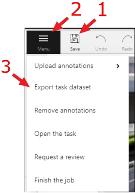
-
Choose the format for exporting the dataset. Exporting is available in several formats:
- CVAT for video choose if the task is created in interpolation mode.
- CVAT for images choose if a task is created in annotation mode.

- PASCAL VOC
- (VOC) Segmentation mask — archive contains class and instance masks for each frame in the png format and a text file with the value of each color.
- YOLO
- COCO
- TFRecord
- MOT
- LabelMe 3.0
- Datumaro
- ImageNet
- CamVid
- WIDER Face
- VGGFace2
- Market-1501
- ICDAR13/15
For 3D tasks, the following formats are available:
- Kitti Raw Format 1.0
- Sly Point Cloud Format 1.0 - Supervisely Point Cloud dataset
-
To download images with the dataset tick the
Save imagesbox -
(Optional) To name the resulting archive, use the
Custom namefield.
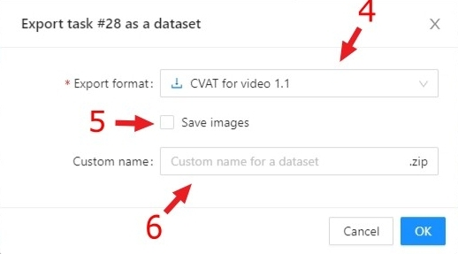
2 - Search
There are several options how to use the search.
- Search within all fields (owner, assignee, task name, task status, task mode). To execute enter a search string in search field.
- Search for specific fields. How to perform:
owner: admin- all tasks created by the user who has the substring “admin” in his nameassignee: employee- all tasks which are assigned to a user who has the substring “employee” in his namename: training- all tasks with the substring “training” in their namesmode: annotationormode: interpolation- all tasks with images or videos.status: annotationorstatus: validationorstatus: completed- search by statusid: 5- task with id = 5.
- Multiple filters. Filters can be combined (except for the identifier) using the keyword
AND:mode: interpolation AND owner: adminmode: annotation and status: annotation
The search is case insensitive.

3 - Projects
Create project
At CVAT, you can create a project containing tasks of the same type. All tasks related to the project will inherit a list of labels.
To create a project, go to the projects section by clicking on the Projects item in the top menu.
On the projects page, you can see a list of projects, use a search, or create a new project by clicking Create New Project.
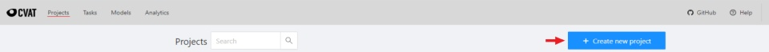
You can change: the name of the project, the list of labels (which will be used for tasks created as parts of this project) and a link to the issue.
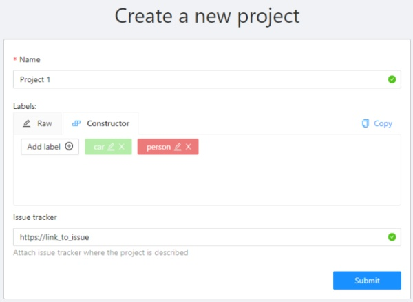
Once created, the project will appear on the projects page. To open a project, just click on it.
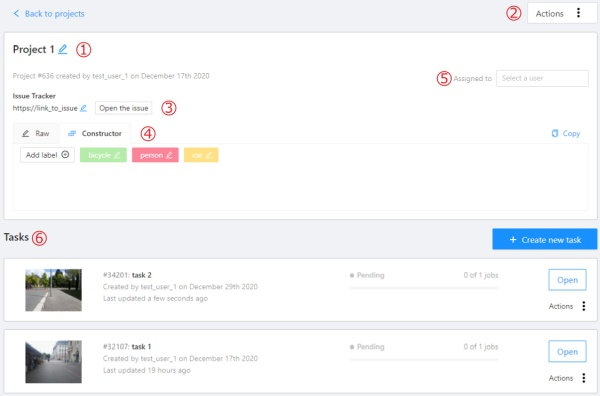
Here you can do the following:
- Change the project’s title.
- Open the
Actionsmenu. - Change issue tracker or open issue tracker if it is specified.
- Change labels.
You can add new labels or add attributes for the existing labels in the Raw mode or the Constructor mode.
You can also change the color for different labels. By clicking
Copyyou can copy the labels to the clipboard. - Assigned to — is used to assign a project to a person. Start typing an assignee’s name and/or choose the right person out of the dropdown list.
Tasks— is a list of all tasks for a particular project.
It is possible to choose a subset for tasks in the project. You can use the available options
(Train, Test, Validation) or set your own.
You can remove the project and all related tasks through the Action menu.
Export project
It is possible to download an entire project instead of exporting individual tasks. In this case,
annotations for all tasks in a project will be available in a single archive.
To export a project, do the following on the Project page:
- Open the
Actionsmenu. - Press the
Export project datasetbutton.
Additional information about exporting tasks can be found in the Downloading annotations section.
4 - Shape mode (advanced)
Basic operations in the mode were described in section shape mode (basics).
Occluded
Occlusion is an attribute used if an object is occluded by another object or
isn’t fully visible on the frame. Use Q shortcut to set the property
quickly.

Example: the three cars on the figure below should be labeled as occluded.
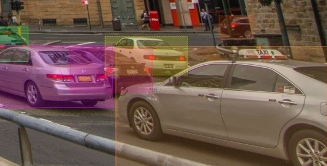
If a frame contains too many objects and it is difficult to annotate them
due to many shapes placed mostly in the same place, it makes sense
to lock them. Shapes for locked objects are transparent, and it is easy to
annotate new objects. Besides, you can’t change previously annotated objects
by accident. Shortcut: L.

5 - Track mode (advanced)
Basic operations in the mode were described in section track mode (basics).
Shapes that were created in the track mode, have extra navigation buttons.
-
These buttons help to jump to the previous/next keyframe.

-
The button helps to jump to the initial frame and to the last keyframe.
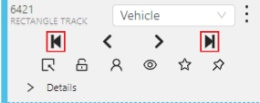
You can use the Split function to split one track into two tracks:
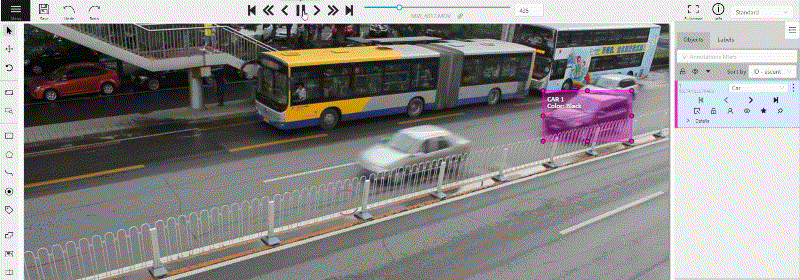
6 - Attribute annotation mode (advanced)
Basic operations in the mode were described in section attribute annotation mode (basics).
It is possible to handle lots of objects on the same frame in the mode.
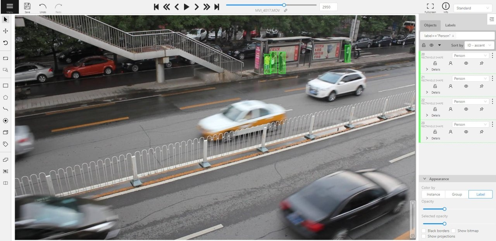
It is more convenient to annotate objects of the same type. In this case you can apply
the appropriate filter. For example, the following filter will
hide all objects except person: label=="Person".
To navigate between objects (person in this case),
use the following buttons switch between objects in the frame on the special panel:

or shortcuts:
Tab— go to the next objectShift+Tab— go to the previous object.
In order to change the zoom level, go to settings (press F3)
in the workspace tab and set the value Attribute annotation mode (AAM) zoom margin in px.
7 - Annotation with rectangle by 4 points
It is an efficient method of bounding box annotation, proposed here. Before starting, you need to make sure that the drawing method by 4 points is selected.

Press Shape or Track for entering drawing mode. Click on four extreme points:
the top, bottom, left- and right-most physical points on the object.
Drawing will be automatically completed right after clicking the fourth point.
Press Esc to cancel editing.

8 - Annotation with points
8.1 - Points in shape mode
It is used for face, landmarks annotation etc.
Before you start you need to select the Points. If necessary you can set a fixed number of points
in the Number of points field, then drawing will be stopped automatically.
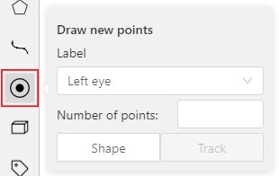
Click Shape to entering the drawing mode. Now you can start annotation of the necessary area.
Points are automatically grouped — all points will be considered linked between each start and finish.
Press N again or click the Done button on the top panel to finish marking the area.
You can delete a point by clicking with pressed Ctrl or right-clicking on a point and selecting Delete point.
Clicking with pressed Shift will open the points shape editor.
There you can add new points into an existing shape. You can zoom in/out (when scrolling the mouse wheel)
and move (when clicking the mouse wheel and moving the mouse) while drawing. You can drag an object after
it has been drawn and change the position of individual points after finishing an object.

8.2 - Linear interpolation with one point
You can use linear interpolation for points to annotate a moving object:
-
Before you start, select the
Points. -
Linear interpolation works only with one point, so you need to set
Number of pointsto 1. -
After that select the
Track.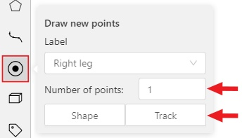
-
Click
Trackto enter the drawing mode left-click to create a point and after that shape will be automatically completed.
-
Move forward a few frames and move the point to the desired position, this way you will create a keyframe and intermediate frames will be drawn automatically. You can work with this object as with an interpolated track: you can hide it using the
Outside, move around keyframes, etc.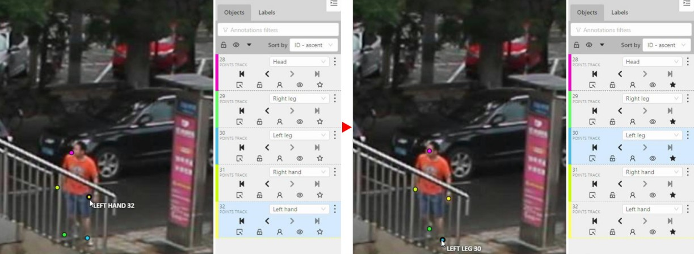
-
This way you’ll get linear interpolation using the
Points.
9 - Annotation with polylines
It is used for road markup annotation etc.
Before starting, you need to select the Polyline. You can set a fixed number of points
in the Number of points field, then drawing will be stopped automatically.

Click Shape to enter drawing mode. There are two ways to draw a polyline —
you either create points by clicking or by dragging a mouse on the screen while holding Shift.
When Shift isn’t pressed, you can zoom in/out (when scrolling the mouse wheel)
and move (when clicking the mouse wheel and moving the mouse), you can delete
previous points by right-clicking on it.
Press N again or click the Done button on the top panel to complete the shape.
You can delete a point by clicking on it with pressed Ctrl or right-clicking on a point
and selecting Delete point. Click with pressed Shift will open a polyline editor.
There you can create new points(by clicking or dragging) or delete part of a polygon closing
the red line on another point. Press Esc to cancel editing.

10 - Annotation with polygons
10.1 - Manual drawing
It is used for semantic / instance segmentation.
Before starting, you need to select Polygon on the controls sidebar and choose the correct Label.
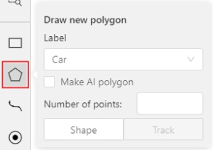
- Click
Shapeto enter drawing mode. There are two ways to draw a polygon: either create points by clicking or by dragging the mouse on the screen while holdingShift.
| Clicking points | Holding Shift+Dragging |
|---|---|
 |
 |
- When
Shiftisn’t pressed, you can zoom in/out (when scrolling the mouse wheel) and move (when clicking the mouse wheel and moving the mouse), you can also delete the previous point by right-clicking on it. - You can use the
Selected opacityslider in theObjects sidebarto change the opacity of the polygon. You can read more in the Objects sidebar section. - Press
Nagain or click theDonebutton on the top panel for completing the shape. - After creating the polygon, you can move the points or delete them by right-clicking and selecting
Delete pointor clicking with pressedAltkey in the context menu.
10.2 - Drawing using automatic borders

You can use auto borders when drawing a polygon. Using automatic borders allows you to automatically trace the outline of polygons existing in the annotation.
-
To do this, go to settings -> workspace tab and enable
Automatic Borderingor pressCtrlwhile drawing a polygon.
-
Start drawing / editing a polygon.
-
Points of other shapes will be highlighted, which means that the polygon can be attached to them.
-
Define the part of the polygon path that you want to repeat.
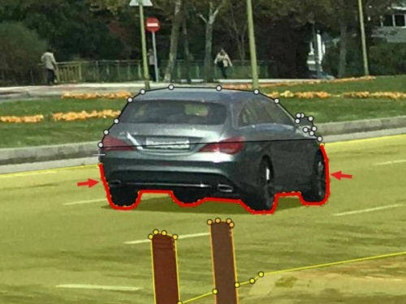
-
Click on the first point of the contour part.

-
Then click on any point located on part of the path. The selected point will be highlighted in purple.

-
Click on the last point and the outline to this point will be built automatically.

Besides, you can set a fixed number of points in the Number of points field, then
drawing will be stopped automatically. To enable dragging you should right-click
inside the polygon and choose Switch pinned property.
Below you can see results with opacity and black stroke:
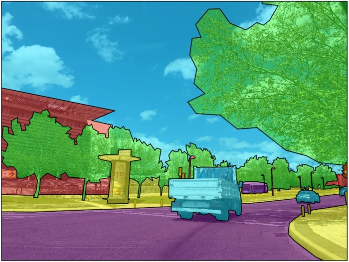
If you need to annotate small objects, increase Image Quality to
95 in Create task dialog for your convenience.
10.3 - Edit polygon
To edit a polygon you have to click on it while holding Shift, it will open the polygon editor.
-
In the editor you can create new points or delete part of a polygon by closing the line on another point.
-
When
Intelligent polygon croppingoption is activated in the settings, СVAT considers two criteria to decide which part of a polygon should be cut off during automatic editing.- The first criteria is a number of cut points.
- The second criteria is a length of a cut curve.
If both criteria recommend to cut the same part, algorithm works automatically, and if not, a user has to make the decision. If you want to choose manually which part of a polygon should be cut off, disable
Intelligent polygon croppingin the settings. In this case after closing the polygon, you can select the part of the polygon you want to leave.
-
You can press
Escto cancel editing.
10.4 - Track mode with polygons
Polygons in the track mode allow you to mark moving objects more accurately other than using a rectangle (Tracking mode (basic); Tracking mode (advanced)).
-
To create a polygon in the track mode, click the
Trackbutton.
-
Create a polygon the same way as in the case of Annotation with polygons. Press
Nor click theDonebutton on the top panel to complete the polygon. -
Pay attention to the fact that the created polygon has a starting point and a direction, these elements are important for annotation of the following frames.
-
After going a few frames forward press
Shift+N, the old polygon will disappear and you can create a new polygon. The new starting point should match the starting point of the previously created polygon (in this example, the top of the left mirror). The direction must also match (in this example, clockwise). After creating the polygon, pressNand the intermediate frames will be interpolated automatically.
-
If you need to change the starting point, right-click on the desired point and select
Set starting point. To change the direction, right-click on the desired point and select switch orientation.
There is no need to redraw the polygon every time using Shift+N,
instead you can simply move the points or edit a part of the polygon by pressing Shift+Click.
10.5 - Creating masks
Cutting holes in polygons
Currently, CVAT does not support cutting transparent holes in polygons. However, it is poissble to generate holes in exported instance and class masks. To do this, one needs to define a background class in the task and draw holes with it as additional shapes above the shapes needed to have holes:
The editor window:

Remember to use z-axis ordering for shapes by [-] and [+, =] keys.
Exported masks:


Notice that it is currently impossible to have a single instance number for internal shapes (they will be merged into the largest one and then covered by “holes”).
Creating masks
There are several formats in CVAT that can be used to export masks:
Segmentation Mask(PASCAL VOC masks)CamVidMOTSICDARCOCO(RLE-encoded instance masks, guide)TFRecord(over Datumaro, guide):Datumaro
An example of exported masks (in the Segmentation Mask format):


Important notices:
- Both boxes and polygons are converted into masks
- Grouped objects are considered as a single instance and exported as a single mask (label and attributes are taken from the largest object in the group)
Class colors
All the labels have associated colors, which are used in the generated masks. These colors can be changed in the task label properties:

Label colors are also displayed in the annotation window on the right panel, where you can show or hide specific labels (only the presented labels are displayed):

A background class can be:
- A default class, which is implicitly-added, of black color (RGB 0, 0, 0)
backgroundclass with any color (has a priority, name is case-insensitive)- Any class of black color (RGB 0, 0, 0)
To change background color in generated masks (default is black),
change background class color to the desired one.
11 - OpenCV tools
The tool based on Open CV Computer Vision library which is an open-source product that includes many CV algorithms. Some of these algorithms can be used to simplify the annotation process.
First step to work with OpenCV is to load it into CVAT. Click on the toolbar icon, then click Load OpenCV.

Once it is loaded, the tool’s functionality will be available.
Intelligent scissors
Intelligent scissors is an CV method of creating a polygon by placing points with automatic drawing of a line between them. The distance between the adjacent points is limited by the threshold of action, displayed as a red square which is tied to the cursor.
-
First, select the label and then click on the
intelligent scissorsbutton.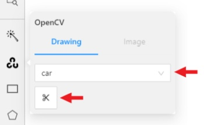
-
Create the first point on the boundary of the allocated object. You will see a line repeating the outline of the object.
-
Place the second point, so that the previous point is within the restrictive threshold. After that a line repeating the object boundary will be automatically created between the points.
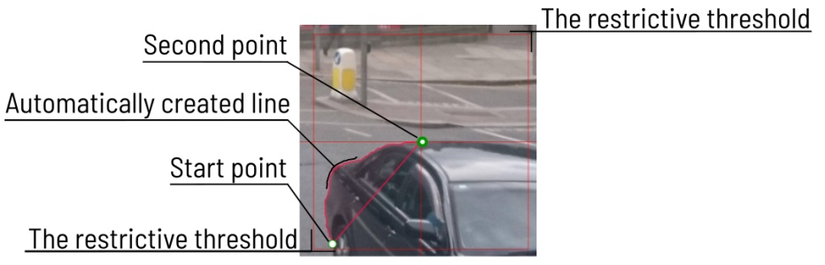
To increase or lower the action threshold, hold
Ctrland scroll the mouse wheel. Increasing action threshold will affect the performance. During the drawing process you can remove the last point by clicking on it with the left mouse button. -
You can also create a boundary manually (like when creating a polygon) by temporarily disabling the automatic line creation. To do that, switch blocking on by pressing
Ctrl. -
In the process of drawing, you can select the number of points in the polygon using the switch.

-
You can use the
Selected opacityslider in theObjects sidebarto change the opacity of the polygon. You can read more in the Objects sidebar section. -
Once all the points are placed, you can complete the creation of the object by clicking on the
Donebutton on the top panel or pressNon your keyboard. As a result, a polygon will be created (read more about the polygons in the annotation with polygons).
Histogram Equalization
Histogram equalization is an CV method that improves contrast in an image in order to stretch out the intensity range. This method usually increases the global contrast of images when its usable data is represented by close contrast values. It is useful in images with backgrounds and foregrounds that are both bright or both dark.
-
First, select the image tab and then click on
histogram equalizationbutton.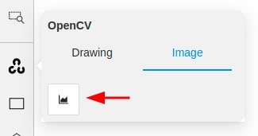
-
Then contrast of current frame will be improved. If you change frame, it will be equalized too. You can disable equalization by clicking
histogram equalizationbutton again.
12 - AI Tools
The tool is designed for semi-automatic and automatic annotation using DL models. The tool is available only if there is a corresponding model. For more details about DL models read the Models section.
Interactors
Interactors are used to create a polygon semi-automatically. Supported DL models are not bound to the label and can be used for any objects. To create a polygon usually you need to use regular or positive points. For some kinds of segmentation negative points are available. Positive points are the points related to the object. Negative points should be placed outside the boundary of the object. In most cases specifying positive points alone is enough to build a polygon. A list of available out-of-the-box interactors is placed below.
-
Before you start, select the
magic wandon the controls sidebar and go to theInteractorstab. Then select a label for the polygon and a required DL model. To view help about each of the models, you can click theQuestion markicon.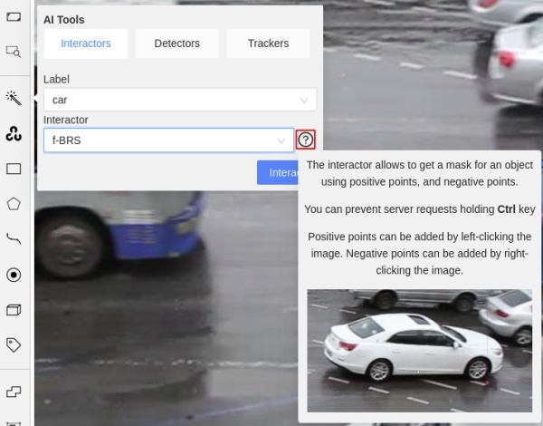
-
Click
Interactto enter the interaction mode. Depending on the selected model, the method of markup will also differ. Now you can place positive and/or negative points. The IOG model also uses a rectangle. Left click creates a positive point and right click creates a negative point. After placing the required number of points (the number is different depending on the model), the request will be sent to the server and when the process is complete a polygon will be created. If you are not satisfied with the result, you can set additional points or remove points. To delete a point, hover over the point you want to delete, if the point can be deleted, it will enlarge and the cursor will turn into a cross, then left-click on the point. If you want to postpone the request and create a few more points, hold downCtrland continue (theBlockbutton on the top panel will turn blue), the request will be sent after the key is released.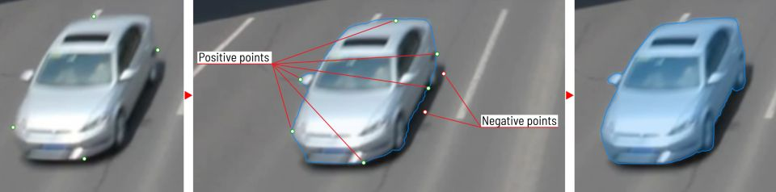
-
In the process of drawing, you can select the number of points in the polygon using the switch.
-
You can use the
Selected opacityslider in theObjects sidebarto change the opacity of the polygon. You can read more in the Objects sidebar section. -
To finish interaction, click on the
Donebutton on the top panel or pressNon your keyboard. -
When the object is finished, you can edit it like a polygon. You can read about editing polygons in the Annotation with polygons section.
Deep extreme cut (DEXTR)
This is an optimized version of the original model, introduced at the end of 2017. It uses the information about extreme points of an object to get its mask. The mask then converted to a polygon. For now this is the fastest interactor on CPU.
Feature backpropagating refinement scheme (f-BRS)
The model allows to get a mask for an object using positive points (should be left-clicked on the foreground), and negative points (should be right-clicked on the background, if necessary). It is recommended to run the model on GPU, if possible.

Inside-Outside-Guidance
The model uses a bounding box and inside/outside points to create a mask. First of all, you need to create a bounding box, wrapping the object. Then you need to use positive and negative points to say the model where is a foreground, and where is a background. Negative points are optional.
Detectors
Detectors are used to automatically annotate one frame. Supported DL models are suitable only for certain labels.
-
Before you start, click the magic wand on the controls sidebar and select the Detectors icon tab. You need to match the labels of the DL model (left column) with the labels in your task (right column). Then click
Annotate.
-
This action will automatically annotates one frame. In the Automatic annotation section you can read how to make automatic annotation of all frames.
13 - Annotation with Tags
It is used to annotate frames, tags are not displayed in the workspace.
Before you start, open the drop-down list in the top panel and select Tag annotation.
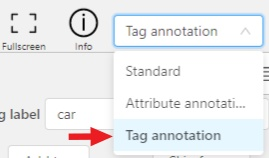
The objects sidebar will be replaced with a special panel for working with tags.
Here you can select a label for a tag and add it by clicking on the Add tag button.
You can also customize hotkeys for each label.
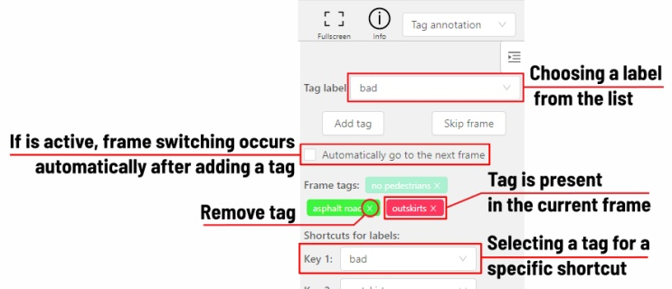
If you need to use only one label for one frame, then enable the Automatically go to the next frame
checkbox, then after you add the tag the frame will automatically switch to the next.
14 - Annotation with cuboids
It is used to annotate 3 dimensional objects such as cars, boxes, etc… Currently the feature supports one point perspective and has the constraint where the vertical edges are exactly parallel to the sides.
14.1 - Creating the cuboid
Before you start, you have to make sure that Cuboid is selected and choose a drawing method ”from rectangle” or “by 4 points”.
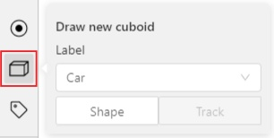
Drawing cuboid by 4 points
Choose a drawing method “by 4 points” and click Shape to enter the drawing mode. There are many ways to draw a cuboid. You can draw the cuboid by placing 4 points, after that the drawing will be completed automatically. The first 3 points determine the plane of the cuboid while the last point determines the depth of that plane. For the first 3 points, it is recommended to only draw the 2 closest side faces, as well as the top and bottom face.
A few examples:
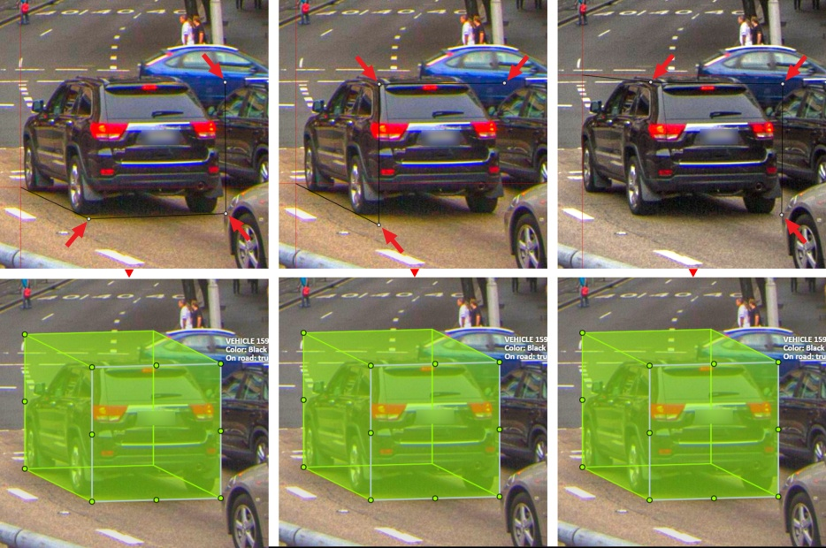
Drawing cuboid from rectangle
Choose a drawing method “from rectangle” and click Shape to enter the drawing mode. When you draw using the rectangle method, you must select the frontal plane of the object using the bounding box. The depth and perspective of the resulting cuboid can be edited.
Example:

14.2 - Editing the cuboid
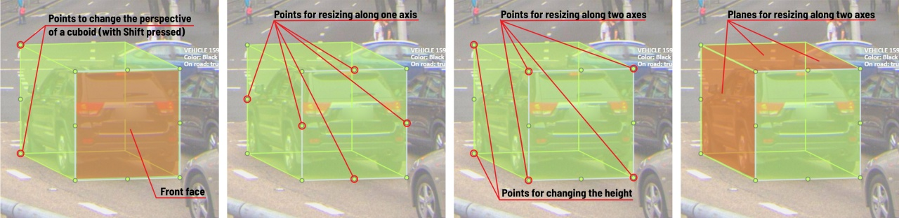
The cuboid can be edited in multiple ways: by dragging points, by dragging certain faces or by dragging planes. First notice that there is a face that is painted with gray lines only, let us call it the front face.
You can move the cuboid by simply dragging the shape behind the front face. The cuboid can be extended by dragging on the point in the middle of the edges. The cuboid can also be extended up and down by dragging the point at the vertices.
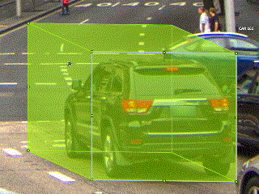
To draw with perspective effects it should be assumed that the front face is the closest to the camera.
To begin simply drag the points on the vertices that are not on the gray/front face while holding Shift.
The cuboid can then be edited as usual.
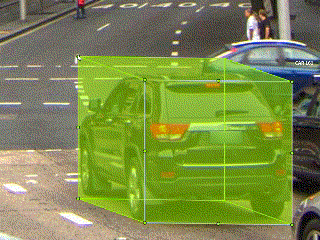
If you wish to reset perspective effects, you may right click on the cuboid,
and select Reset perspective to return to a regular cuboid.

The location of the gray face can be swapped with the adjacent visible side face.
You can do it by right clicking on the cuboid and selecting Switch perspective orientation.
Note that this will also reset the perspective effects.

Certain faces of the cuboid can also be edited, these faces are: the left, right and dorsal faces, relative to the gray face. Simply drag the faces to move them independently from the rest of the cuboid.

You can also use cuboids in track mode, similar to rectangles in track mode (basics and advanced) or Track mode with polygons
15 - 3D Object annotation (advanced)
As well as 2D-task objects, 3D-task objects support the ability to change appearance, attributes, properties and have an action menu. Read more in objects sidebar section.
Moving an object
If you hover the cursor over a cuboid and press Shift+N, the cuboid will be cut,
so you can paste it in other place (double-click to paste the cuboid).
Copying
As well as in 2D task you can copy and paste objects by Ctrl+C and Ctrl+V,
but unlike 2D tasks you have to place a copied object in a 3D space (double click to paste).

Image of the projection window
You can copy or save the projection-window image by left-clicking on it and selecting a “save image as” or “copy image”.
16 - Filter
There are some reasons to use the feature:
- When you use a filter, objects that don’t match the filter will be hidden.
- The fast navigation between frames which have an object of interest.
Use the
Left Arrow/Right Arrowkeys for this purpose or customize the UI buttons by right-clicking and selectswitching by filter. If there are no objects which correspond to the filter, you will go to the previous / next frame which contains any annotated objects.
To apply filters you need to click on the button on the top panel.

It will open a window for filter input. Here you will find two buttons: Add rule and Add group.
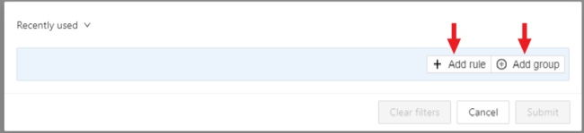
Rules
The “Add rule” button adds a rule for objects display. A rule may use the following properties:
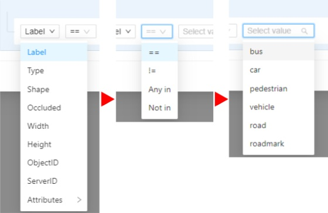
Supported properties:
| Properties | Supported values | Description |
|---|---|---|
Label |
all the label names that are in the task | label name |
Type |
shape, track or tag | type of object |
Shape |
all shape types | type of shape |
Occluded |
true or false | occluded (read more) |
Width |
number of px or field | shape width |
Height |
number of px or field | shape height |
ServerID |
number or field | ID of the object on the server (You can find out by forming a link to the object through the Action menu) |
ObjectID |
number or field | ID of the object in your client (indicated on the objects sidebar) |
Attributes |
some other fields including attributes with a similar type or a specific attribute value |
any fields specified by a label |
Supported operators for properties:
== - Equally; != - Not equal; > - More; >= - More or equal; < - Less; <= - Less or equal;
Any in; Not in - these operators allow you to set multiple values in one rule;
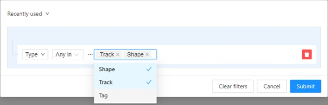
Is empty; is not empty – these operators don’t require to input a value.
Between; Not between – these operators allow you to choose a range between two values.
Some properties support two types of values that you can choose:
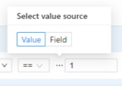
You can add multiple rules, to do so click the add rule button and set another rule.
Once you’ve set a new rule, you’ll be able to choose which operator they will be connected by: And or Or.
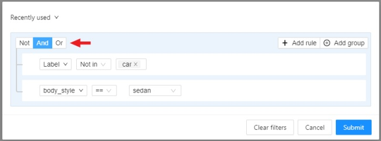
All subsequent rules will be joined by the chosen operator.
Click Submit to apply the filter or if you want multiple rules to be connected by different operators, use groups.
Groups
To add a group, click the “add group” button. Inside the group you can create rules or groups.
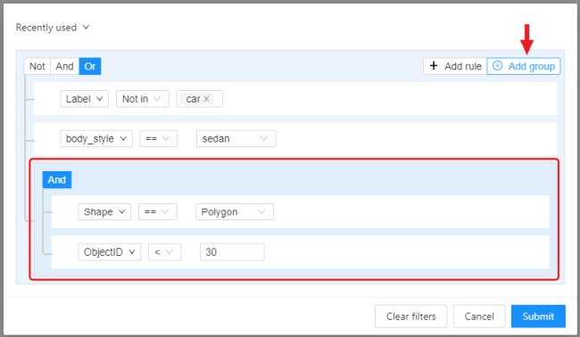
If there is more than one rule in the group, they can be connected by And or Or operators.
The rule group will work as well as a separate rule outside the group and will be joined by an
operator outside the group.
You can create groups within other groups, to do so you need to click the add group button within the group.
You can move rules and groups. To move the rule or group, drag it by the button.
To remove the rule or group, click on the Delete button.
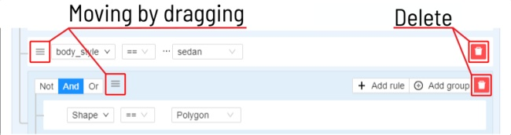
If you activate the Not button, objects that don’t match the group will be filtered out.
Click Submit to apply the filter.
The “Cancel” button undoes the filter. The Clear filter button removes the filter.
Once applied filter automatically appears in Recent used list. Maximum length of the list is 10.
17 - Shape grouping
This feature allows us to group several shapes.
You may use the Group Shapes button or shortcuts:
G— start selection / end selection in group modeEsc— close group modeShift+G— reset group for selected shapes
You may select shapes clicking on them or selecting an area.
Grouped shapes will have group_id filed in dumped annotation.
Also you may switch color distribution from an instance (default) to a group.
You have to switch Color By Group checkbox for that.
Shapes that don’t have group_id, will be highlighted in white.
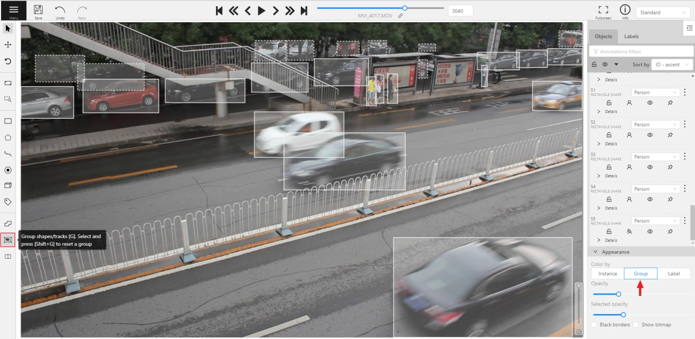
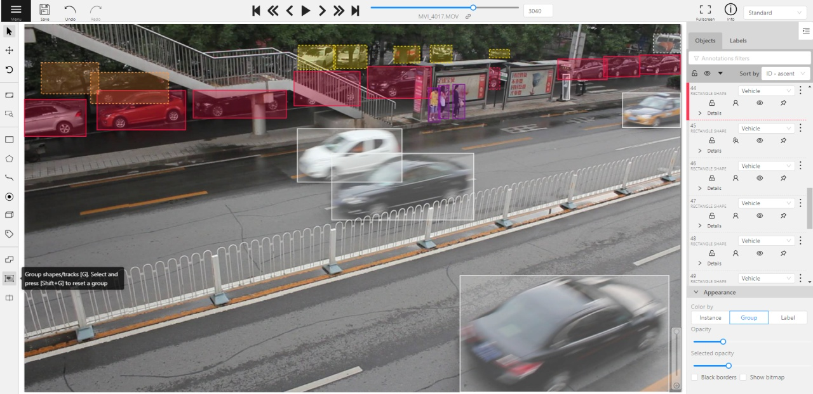
18 - Review
A special mode to check the annotation allows you to point to an object or area in the frame containing an error.
Review mode is not available in 3D tasks.
To go into review mode, you need to select Request a review in the menu and assign the user to run a check.
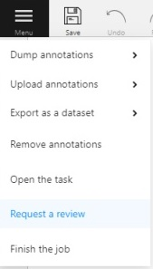
After that, the job status will be changed to validation
and the reviewer will be able to open the task in review mode.
Review mode is a UI mode, there is a special “issue” tool which you can use to identify objects
or areas in the frame and describe the problem.
-
To do this, first click
open an issueicon on the controls sidebar:
-
Then click on an object in the frame to highlight the object or highlight the area by holding the left mouse button and describe the problem. The object or area will be shaded in red.
-
The created issue will appear in the workspace and in the
issuestab on the objects sidebar. -
After you save the annotation, other users will be able to see the problem, comment on each issue and change the status of the problem to
resolved. -
You can use the arrows on the issues tab to navigate the frames that contain problems.
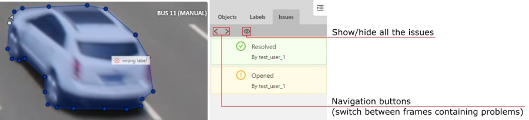
-
Once all the problems are marked, save the annotation, open the menu and select “submit the review”. After that you’ll see a form containing the verification statistics, here you can give an assessment of the job and choose further actions:
- Accept - changes the status of the job to
completed. - Review next – passes the job to another user for re-review.
- Reject - changes the status of the job to
annotation.
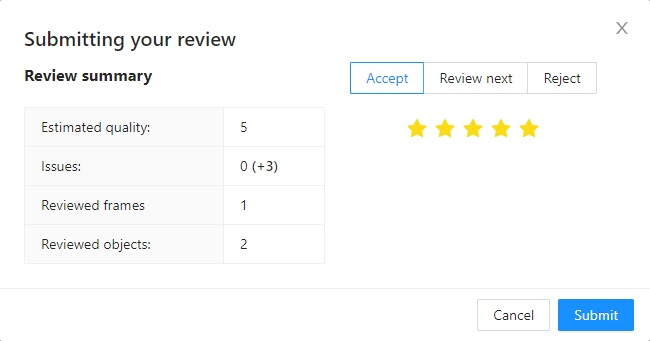
- Accept - changes the status of the job to
19 - Context images for 2d task
When you create a task, you can provide the images with additional contextual images. To do this, create a folder related_images and place a folder with a contextual image in it (make sure the folder has the same name as the image to which it should be tied). An example of the structure:
- root_directory
- image_1_to_be_annotated.jpg
- image_2_to_be_annotated.jpg
- related_images/
- image_1_to_be_annotated_jpg/
- context_image_for_image_1.jpg
- image_2_to_be_annotated_jpg/
- context_image_for_image_2.jpg
- image_1_to_be_annotated_jpg/
- subdirectory_example/
- image_3_to_be_annotated.jpg
- related_images/
- image_3_to_be_annotated_jpg/
- context_image_for_image_3.jpg
- image_3_to_be_annotated_jpg/
The contextual image is displayed in the upper right corner of the workspace. You can hide it by clicking on the corresponding button or maximize the image by clicking on it.
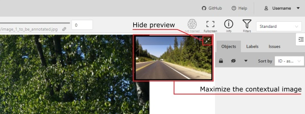
When the image is maximized, you can rotate it clockwise/counterclockwise and zoom in/out.
You can also move the image by moving the mouse while holding down the LMB
and zoom in/out by scrolling the mouse wheel.
To close the image, just click the X.
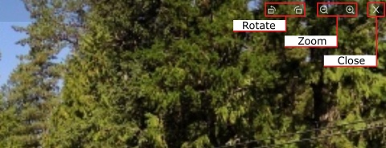
20 - Shortcuts
Many UI elements have shortcut hints. Put your pointer to a required element to see it.

| Shortcut | Common |
|---|---|
| Main functions | |
F1 |
Open/hide the list of available shortcuts |
F2 |
Go to the settings page or go back |
Ctrl+S |
Go to the settings page or go back |
Ctrl+Z |
Cancel the latest action related with objects |
Ctrl+Shift+Z or Ctrl+Y |
Cancel undo action |
Hold Mouse Wheel |
To move an image frame (for example, while drawing) |
| Player | |
F |
Go to the next frame |
D |
Go to the previous frame |
V |
Go forward with a step |
C |
Go backward with a step |
Right |
Search the next frame that satisfies to the filters or next frame which contain any objects |
Left |
Search the previous frame that satisfies to the filters or previous frame which contain any objects |
Space |
Start/stop automatic changing frames |
` or ~ |
Focus on the element to change the current frame |
| Modes | |
N |
Repeat the latest procedure of drawing with the same parameters |
M |
Activate or deactivate mode to merging shapes |
Alt+M |
Activate or deactivate mode to splitting shapes |
G |
Activate or deactivate mode to grouping shapes |
Shift+G |
Reset group for selected shapes (in group mode) |
Esc |
Cancel any active canvas mode |
| Image operations | |
Ctrl+R |
Change image angle (add 90 degrees) |
Ctrl+Shift+R |
Change image angle (subtract 90 degrees) |
Shift+B+= |
Increase brightness level for the image |
Shift+B+- |
Decrease brightness level for the image |
Shift+C+= |
Increase contrast level for the image |
Shift+C+- |
Decrease contrast level for the image |
Shift+S+= |
Increase saturation level for the image |
Shift+S+- |
Increase contrast level for the image |
Shift+G+= |
Make the grid more visible |
Shift+G+- |
Make the grid less visible |
Shift+G+Enter |
Set another color for the image grid |
| Operations with objects | |
Ctrl |
Switch automatic bordering for polygons and polylines during drawing/editing |
Hold Ctrl |
When the shape is active and fix it |
Alt+Click on point |
Deleting a point (used when hovering over a point of polygon, polyline, points) |
Shift+Click on point |
Editing a shape (used when hovering over a point of polygon, polyline or points) |
Right-Click on shape |
Display of an object element from objects sidebar |
T+L |
Change locked state for all objects in the sidebar |
L |
Change locked state for an active object |
T+H |
Change hidden state for objects in the sidebar |
H |
Change hidden state for an active object |
Q or / |
Change occluded property for an active object |
Del or Shift+Del |
Delete an active object. Use shift to force delete of locked objects |
- or _ |
Put an active object “farther” from the user (decrease z axis value) |
+ or = |
Put an active object “closer” to the user (increase z axis value) |
Ctrl+C |
Copy shape to CVAT internal clipboard |
Ctrl+V |
Paste a shape from internal CVAT clipboard |
Hold Ctrl while pasting |
When pasting shape from the buffer for multiple pasting. |
Ctrl+B |
Make a copy of the object on the following frames |
Ctrl+(0..9) |
Changes a label for an activated object or for the next drawn object if no objects are activated |
| Operations are available only for track | |
K |
Change keyframe property for an active track |
O |
Change outside property for an active track |
R |
Go to the next keyframe of an active track |
E |
Go to the previous keyframe of an active track |
| Attribute annotation mode | |
Up Arrow |
Go to the next attribute (up) |
Down Arrow |
Go to the next attribute (down) |
Tab |
Go to the next annotated object in current frame |
Shift+Tab |
Go to the previous annotated object in current frame |
<number> |
Assign a corresponding value to the current attribute |
| Standard 3d mode | |
Shift+arrrowup |
Increases camera roll angle |
Shift+arrrowdown |
Decreases camera roll angle |
Shift+arrrowleft |
Decreases camera pitch angle |
Shift+arrrowright |
Increases camera pitch angle |
Alt+O |
Move the camera up |
Alt+U |
Move the camera down |
Alt+J |
Move the camera left |
Alt+L |
Move the camera right |
Alt+I |
Performs zoom in |
Alt+K |
Performs zoom out |
21 - Export/import a task
In CVAT you can export and import tasks. This can be used to backup the task on your PC or to transfer the task to another server.
Export task
To export a task, open the action menu and select Export Task.
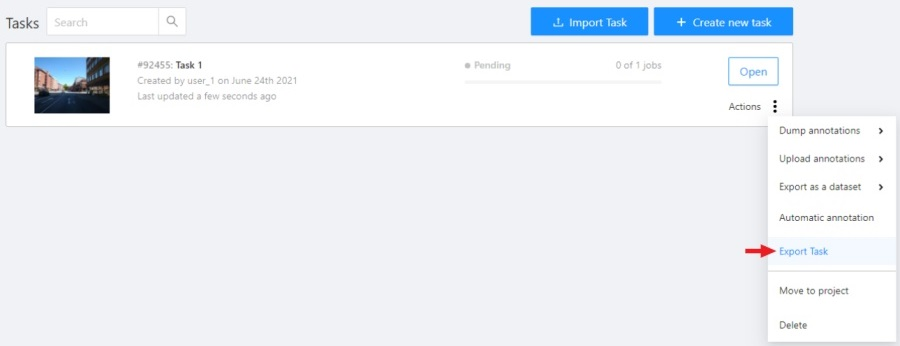
As a result, you’ll get a zip archive containing data, task specification and annotations with the following structure:
.
├── data
│ ├── {user uploaded data}
│ ├── manifest.jsonl
├── task.json
└── annotations.json
Export task API:
- endpoint:
/api/v1/tasks/{id}?action=export - method:
GET - responses: 202, 201 with zip archive payload
Import task
To import a task from an archive, go to the tasks page, click the Import Task button and select the archive you need.
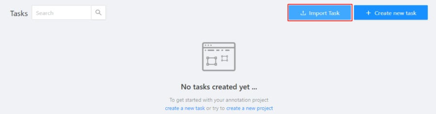
As a result, you’ll get a task containing data, parameters, and annotations of the previously exported task.
Import task API:
- endpoint:
/api/v1/tasks?action=import - method:
POST - Content-Type:
multipart/form-data - responses: 202, 201 with json payload
22 - Task synchronization with a repository
-
At the end of the annotation process, a task is synchronized by clicking
Synchronizeon the task page. Notice: this feature works only if a git repository was specified when the task was created.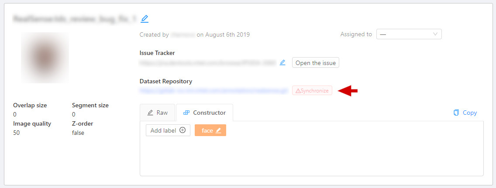
-
After synchronization the button
Syncis highlighted in green. The annotation is now in the repository in a temporary branch.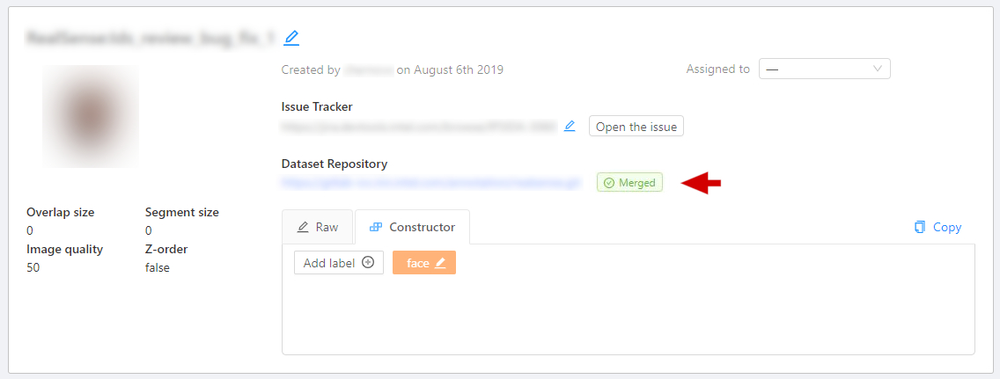
-
The next step is to go to the repository and manually create a pull request to the main branch.
-
After confirming the PR, when the annotation is saved in the main branch, the color of the task changes to blue.
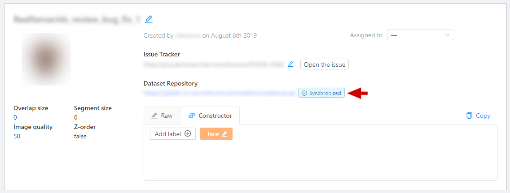
23 - Models
The Models page contains a list of deep learning (DL) models deployed for semi-automatic and automatic annotation. To open the Models page, click the Models button on the navigation bar. The list of models is presented in the form of a table. The parameters indicated for each model are the following:
Frameworkthe model is based on- model
Name - model
Type:detector- used for automatic annotation (available in detectors and automatic annotation)interactor- used for semi-automatic shape annotation (available in interactors)tracker- used for semi-automatic track annotation (available in trackers)reid- used to combine individual objects into a track (available in automatic annotation)
Description- brief description of the modelLabels- list of the supported labels (only for the models of thedetectorstype)

Read how to install your model here.
24 - Automatic annotation
Automatic Annotation is used for creating preliminary annotations.
To use Automatic Annotation you need a DL model. You can use primary models or models uploaded by a user.
You can find the list of available models in the Models section.
-
To launch automatic annotation, you should open the dashboard and find a task which you want to annotate. Then click the
Actionsbutton and choose optionAutomatic Annotationfrom the dropdown menu.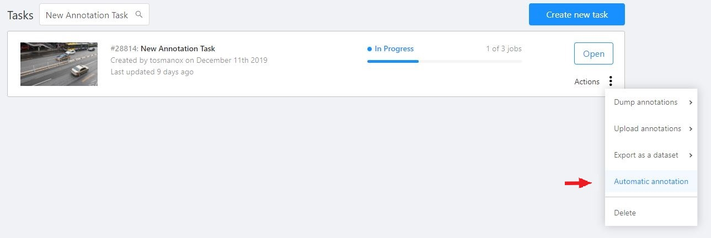
-
In the dialog window select a model you need. DL models are created for specific labels, e.g. the Crossroad model was taught using footage from cameras located above the highway and it is best to use this model for the tasks with similar camera angles. If it’s necessary select the
Clean old annotationscheckbox. Adjust the labels so that the task labels will correspond to the labels of the DL model. For example, let’s consider a task where you have to annotate labels “car” and “person”. You should connect the “person” label from the model to the “person” label in the task. As for the “car” label, you should choose the most fitting label available in the model - the “vehicle” label. The task requires to annotate cars only and choosing the “vehicle” label implies annotation of all vehicles, in this case using auto annotation will help you complete the task faster. ClickSubmitto begin the automatic annotation process.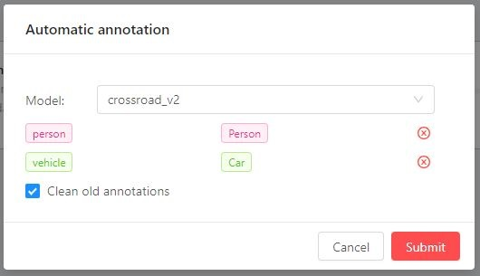
-
At runtime - you can see the percentage of completion. You can cancel the automatic annotation by clicking on the
Cancelbutton.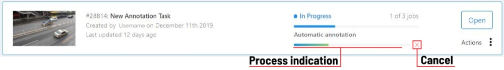
-
The end result of an automatic annotation is an annotation with separate rectangles (or other shapes)

-
You can combine separate bounding boxes into tracks using the
Person reidentificationmodel. To do this, click on the automatic annotation item in the action menu again and select the model of theReIDtype (in this case thePerson reidentificationmodel). You can set the following parameters:- Model
Thresholdis a maximum cosine distance between objects’ embeddings. Maximum distancedefines a maximum radius that an object can diverge between adjacent frames.
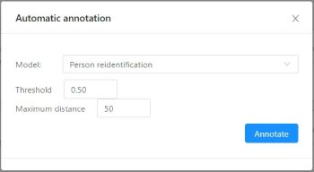
- Model
-
You can remove false positives and edit tracks using
SplitandMergefunctions.
25 - Analytics Monitoring
If your CVAT instance was created with analytics support, you can press the Analytics button in the dashboard
and analytics and journals will be opened in a new tab.
The analytics allows you to see how much time every user spends on each task and how much work they did over any time range.
It also has an activity graph which can be modified with a number of users shown and a timeframe.
26 - XML annotation format
When you want to download annotations from Computer Vision Annotation Tool (CVAT) you can choose one of several data formats. The document describes XML annotation format. Each format has X.Y version (e.g. 1.0). In general the major version (X) is incremented when the data format has incompatible changes and the minor version (Y) is incremented when the data format is slightly modified (e.g. it has one or several extra fields inside meta information). The document will describe all changes for all versions of XML annotation format.
Version 1.1
There are two different formats for images and video tasks at the moment.
The both formats have a common part which is described below. From the previous version flipped tag was added.
Also original_size tag was added for interpolation mode to specify frame size.
In annotation mode each image tag has width and height attributes for the same purpose.
<?xml version="1.0" encoding="utf-8"?>
<annotations>
<version>1.1</version>
<meta>
<task>
<id>Number: id of the task</id>
<name>String: some task name</name>
<size>Number: count of frames/images in the task</size>
<mode>String: interpolation or annotation</mode>
<overlap>Number: number of overlapped frames between segments</overlap>
<bugtracker>String: URL on an page which describe the task</bugtracker>
<flipped>Boolean: were images of the task flipped? (True/False)</flipped>
<created>String: date when the task was created</created>
<updated>String: date when the task was updated</updated>
<labels>
<label>
<name>String: name of the label (e.g. car, person)</name>
<attributes>
<attribute>
<name>String: attribute name</name>
<mutable>Boolean: mutable (allow different values between frames)</mutable>
<input_type>String: select, checkbox, radio, number, text</input_type>
<default_value>String: default value</default_value>
<values>String: possible values, separated by newlines
ex. value 2
ex. value 3</values>
</attribute>
</attributes>
</label>
</labels>
<segments>
<segment>
<id>Number: id of the segment</id>
<start>Number: first frame</start>
<stop>Number: last frame</stop>
<url>String: URL (e.g. http://cvat.example.com/?id=213)</url>
</segment>
</segments>
<owner>
<username>String: the author of the task</username>
<email>String: email of the author</email>
</owner>
<original_size>
<width>Number: frame width</width>
<height>Number: frame height</height>
</original_size>
</task>
<dumped>String: date when the annotation was dumped</dumped>
</meta>
...
</annotations>
Annotation
Below you can find description of the data format for images tasks.
On each image it is possible to have many different objects. Each object can have multiple attributes.
If an annotation task is created with z_order flag then each object will have z_order attribute which is used
to draw objects properly when they are intersected (if z_order is bigger the object is closer to camera).
In previous versions of the format only box shape was available.
In later releases polygon, polyline, and points were added. Please see below for more details:
<?xml version="1.0" encoding="utf-8"?>
<annotations>
...
<image id="Number: id of the image (the index in lexical order of images)" name="String: path to the image"
width="Number: image width" height="Number: image height">
<box label="String: the associated label" xtl="Number: float" ytl="Number: float" xbr="Number: float" ybr="Number: float" occluded="Number: 0 - False, 1 - True" z_order="Number: z-order of the object">
<attribute name="String: an attribute name">String: the attribute value</attribute>
...
</box>
<polygon label="String: the associated label" points="x0,y0;x1,y1;..." occluded="Number: 0 - False, 1 - True"
z_order="Number: z-order of the object">
<attribute name="String: an attribute name">String: the attribute value</attribute>
...
</polygon>
<polyline label="String: the associated label" points="x0,y0;x1,y1;..." occluded="Number: 0 - False, 1 - True"
z_order="Number: z-order of the object">
<attribute name="String: an attribute name">String: the attribute value</attribute>
...
</polyline>
<polyline label="String: the associated label" points="x0,y0;x1,y1;..." occluded="Number: 0 - False, 1 - True"
z_order="Number: z-order of the object">
<attribute name="String: an attribute name">String: the attribute value</attribute>
...
</polyline>
<points label="String: the associated label" points="x0,y0;x1,y1;..." occluded="Number: 0 - False, 1 - True"
z_order="Number: z-order of the object">
<attribute name="String: an attribute name">String: the attribute value</attribute>
...
</points>
...
</image>
...
</annotations>
Example:
<?xml version="1.0" encoding="utf-8"?>
<annotations>
<version>1.1</version>
<meta>
<task>
<id>4</id>
<name>segmentation</name>
<size>27</size>
<mode>annotation</mode>
<overlap>0</overlap>
<bugtracker></bugtracker>
<flipped>False</flipped>
<created>2018-09-25 11:34:24.617558+03:00</created>
<updated>2018-09-25 11:38:27.301183+03:00</updated>
<labels>
<label>
<name>car</name>
<attributes>
</attributes>
</label>
<label>
<name>traffic_line</name>
<attributes>
</attributes>
</label>
<label>
<name>wheel</name>
<attributes>
</attributes>
</label>
<label>
<name>plate</name>
<attributes>
</attributes>
</label>
</labels>
<segments>
<segment>
<id>4</id>
<start>0</start>
<stop>26</stop>
<url>http://localhost:8080/?id=4</url>
</segment>
</segments>
<owner>
<username>admin</username>
<email></email>
</owner>
</task>
<dumped>2018-09-25 11:38:28.799808+03:00</dumped>
</meta>
<image id="0" name="filename000.jpg" width="1600" height="1200">
<box label="plate" xtl="797.33" ytl="870.92" xbr="965.52" ybr="928.94" occluded="0" z_order="4">
</box>
<polygon label="car" points="561.30,916.23;561.30,842.77;554.72,761.63;553.62,716.67;565.68,677.20;577.74,566.45;547.04,559.87;536.08,542.33;528.40,520.40;541.56,512.72;559.10,509.43;582.13,506.14;588.71,464.48;583.23,448.03;587.61,434.87;594.19,431.58;609.54,399.78;633.66,369.08;676.43,294.52;695.07,279.17;703.84,279.17;735.64,268.20;817.88,264.91;923.14,266.01;997.70,274.78;1047.04,283.55;1063.49,289.04;1090.90,330.70;1111.74,371.27;1135.86,397.59;1147.92,428.29;1155.60,435.97;1157.79,451.32;1156.69,462.28;1159.98,491.89;1163.27,522.59;1173.14,513.82;1199.46,516.01;1224.68,521.49;1225.77,544.52;1207.13,568.64;1181.91,576.32;1178.62,582.90;1177.53,619.08;1186.30,680.48;1199.46,711.19;1206.03,733.12;1203.84,760.53;1197.26,818.64;1199.46,840.57;1203.84,908.56;1192.88,930.49;1184.10,939.26;1162.17,944.74;1139.15,960.09;1058.01,976.54;1028.40,969.96;1002.09,972.15;931.91,974.35;844.19,972.15;772.92,972.15;729.06,967.77;713.71,971.06;685.20,973.25;659.98,968.86;644.63,984.21;623.80,983.12;588.71,985.31;560.20,966.67" occluded="0" z_order="1">
</polygon>
<polyline label="traffic_line" points="462.10,0.00;126.80,1200.00" occluded="0" z_order="3">
</polyline>
<polyline label="traffic_line" points="1212.40,0.00;1568.66,1200.00" occluded="0" z_order="2">
</polyline>
<points label="wheel" points="574.90,939.48;1170.16,907.90;1130.69,445.26;600.16,459.48" occluded="0" z_order="5">
</points>
</image>
</annotations>
Interpolation
Below you can find description of the data format for video tasks. The annotation contains tracks. Each track corresponds to an object which can be presented on multiple frames. The same object cannot be presented on the same frame in multiple locations. Each location of the object can have multiple attributes even if an attribute is immutable for the object it will be cloned for each location (a known redundancy).
<?xml version="1.0" encoding="utf-8"?>
<annotations>
...
<track id="Number: id of the track (doesn't have any special meeting" label="String: the associated label">
<box frame="Number: frame" xtl="Number: float" ytl="Number: float" xbr="Number: float" ybr="Number: float" outside="Number: 0 - False, 1 - True" occluded="Number: 0 - False, 1 - True" keyframe="Number: 0 - False, 1 - True">
<attribute name="String: an attribute name">String: the attribute value</attribute>
...
</box>
<polygon frame="Number: frame" points="x0,y0;x1,y1;..." outside="Number: 0 - False, 1 - True" occluded="Number: 0 - False, 1 - True" keyframe="Number: 0 - False, 1 - True">
<attribute name="String: an attribute name">String: the attribute value</attribute>
</polygon>
<polyline frame="Number: frame" points="x0,y0;x1,y1;..." outside="Number: 0 - False, 1 - True" occluded="Number: 0 - False, 1 - True" keyframe="Number: 0 - False, 1 - True">
<attribute name="String: an attribute name">String: the attribute value</attribute>
</polyline>
<points frame="Number: frame" points="x0,y0;x1,y1;..." outside="Number: 0 - False, 1 - True" occluded="Number: 0 - False, 1 - True" keyframe="Number: 0 - False, 1 - True">
<attribute name="String: an attribute name">String: the attribute value</attribute>
</points>
...
</track>
...
</annotations>
Example:
<?xml version="1.0" encoding="utf-8"?>
<annotations>
<version>1.1</version>
<meta>
<task>
<id>5</id>
<name>interpolation</name>
<size>4620</size>
<mode>interpolation</mode>
<overlap>5</overlap>
<bugtracker></bugtracker>
<flipped>False</flipped>
<created>2018-09-25 12:32:09.868194+03:00</created>
<updated>2018-09-25 16:05:05.619841+03:00</updated>
<labels>
<label>
<name>person</name>
<attributes>
</attributes>
</label>
<label>
<name>car</name>
<attributes>
</attributes>
</label>
</labels>
<segments>
<segment>
<id>5</id>
<start>0</start>
<stop>4619</stop>
<url>http://localhost:8080/?id=5</url>
</segment>
</segments>
<owner>
<username>admin</username>
<email></email>
</owner>
<original_size>
<width>640</width>
<height>480</height>
</original_size>
</task>
<dumped>2018-09-25 16:05:07.134046+03:00</dumped>
</meta>
<track id="0" label="car">
<polygon frame="0" points="324.79,213.16;323.74,227.90;347.42,237.37;371.11,217.37;350.05,190.00;318.47,191.58" outside="0" occluded="0" keyframe="1">
</polygon>
<polygon frame="1" points="324.79,213.16;323.74,227.90;347.42,237.37;371.11,217.37;350.05,190.00;318.47,191.58" outside="1" occluded="0" keyframe="1">
</polygon>
<polygon frame="6" points="305.32,237.90;312.16,207.90;352.69,206.32;355.32,233.16;331.11,254.74" outside="0" occluded="0" keyframe="1">
</polygon>
<polygon frame="7" points="305.32,237.90;312.16,207.90;352.69,206.32;355.32,233.16;331.11,254.74" outside="1" occluded="0" keyframe="1">
</polygon>
<polygon frame="13" points="313.74,233.16;331.11,220.00;359.53,243.16;333.21,283.16;287.95,274.74" outside="0" occluded="0" keyframe="1">
</polygon>
<polygon frame="14" points="313.74,233.16;331.11,220.00;359.53,243.16;333.21,283.16;287.95,274.74" outside="1" occluded="0" keyframe="1">
</polygon>
</track>
</annotations>
Version 1
There are two different formats for images and video tasks at the moment. Both formats has a common part which is described below:
<?xml version="1.0" encoding="utf-8"?>
<annotations>
<version>1.0</version>
<meta>
<task>
<id>Number: id of the task</id>
<name>String: some task name</name>
<size>Number: count of frames/images in the task</size>
<mode>String: interpolation or annotation</mode>
<overlap>Number: number of overlapped frames between segments</overlap>
<bugtracker>String: URL on an page which describe the task</bugtracker>
<created>String: date when the task was created</created>
<updated>String: date when the task was updated</updated>
<labels>
<label>
<name>String: name of the label (e.g. car, person)</name>
<attributes>
<attribute>String: attributes for the label (e.g. @select=quality:good,bad)</attribute>
</attributes>
</label>
</labels>
<segments>
<segment>
<id>Number: id of the segment</id>
<start>Number: first frame</start>
<stop>Number: last frame</stop>
<url>String: URL (e.g. http://cvat.example.com/?id=213)</url>
</segment>
</segments>
<owner>
<username>String: the author of the task</username>
<email>String: email of the author</email>
</owner>
</task>
<dumped>String: date when the annotation was dumped</dumped>
</meta>
...
</annotations>
Annotation
Below you can find description of the data format for images tasks.
On each image it is possible to have many different objects. Each object can have multiple attributes.
<?xml version="1.0" encoding="utf-8"?>
<annotations>
...
<image id="Number: id of the image (the index in lexical order of images)" name="String: path to the image">
<box label="String: the associated label" xtl="Number: float" ytl="Number: float" xbr="Number: float" ybr="Number: float" occluded="Number: 0 - False, 1 - True">
<attribute name="String: an attribute name">String: the attribute value</attribute>
...
</box>
...
</image>
...
</annotations>
Example:
<?xml version="1.0" encoding="utf-8"?>
<annotations>
<version>1.0</version>
<meta>
<task>
<id>1063</id>
<name>My annotation task</name>
<size>75</size>
<mode>annotation</mode>
<overlap>0</overlap>
<bugtracker></bugtracker>
<created>2018-06-06 11:57:54.807162+03:00</created>
<updated>2018-06-06 12:42:29.375251+03:00</updated>
<labels>
<label>
<name>car</name>
<attributes>
<attribute>@select=model:a,b,c,d</attribute>
</attributes>
</label>
</labels>
<segments>
<segment>
<id>3086</id>
<start>0</start>
<stop>74</stop>
<url>http://cvat.examle.com:8080/?id=3086</url>
</segment>
</segments>
<owner>
<username>admin</username>
<email></email>
</owner>
</task>
<dumped>2018-06-06 15:47:04.386866+03:00</dumped>
</meta>
<image id="0" name="C15_L1_0001.jpg">
<box label="car" xtl="38.95" ytl="26.51" xbr="140.64" ybr="54.29" occluded="0">
<attribute name="parked">false</attribute>
<attribute name="model">a</attribute>
</box>
</image>
<image id="1" name="C15_L1_0002.jpg">
<box label="car" xtl="49.13" ytl="23.34" xbr="149.54" ybr="53.88" occluded="0">
<attribute name="parked">true</attribute>
<attribute name="model">a</attribute>
</box>
</image>
<image id="2" name="C15_L1_0003.jpg">
<box label="car" xtl="50.73" ytl="30.26" xbr="146.72" ybr="59.97" occluded="0">
<attribute name="parked">false</attribute>
<attribute name="model">b</attribute>
</box>
</image>
<image id="39" name="C15_L1_0040.jpg">
<box label="car" xtl="49.60" ytl="30.15" xbr="150.19" ybr="58.06" occluded="0">
<attribute name="parked">false</attribute>
<attribute name="model">c</attribute>
</box>
</image>
</annotations>
Interpolation
Below you can find description of the data format for video tasks. The annotation contains tracks. Each track corresponds to an object which can be presented on multiple frames. The same object cannot be presented on the same frame in multiple locations. Each location of the object can have multiple attributes even if an attribute is immutable for the object it will be cloned for each location (a known redundancy).
<?xml version="1.0" encoding="utf-8"?>
<annotations>
...
<track id="Number: id of the track (doesn't have any special meeting" label="String: the associated label">
<box frame="Number: frame" xtl="Number: float" ytl="Number: float" xbr="Number: float" ybr="Number: float" outside="Number: 0 - False, 1 - True" occluded="Number: 0 - False, 1 - True" keyframe="Number: 0 - False, 1 - True">
<attribute name="String: an attribute name">String: the attribute value</attribute>
...
</box>
...
</track>
...
</annotations>
Example:
<?xml version="1.0" encoding="utf-8"?>
<annotations>
<version>1.0</version>
<meta>
<task>
<id>1062</id>
<name>My interpolation task</name>
<size>30084</size>
<mode>interpolation</mode>
<overlap>20</overlap>
<bugtracker></bugtracker>
<created>2018-05-31 14:13:36.483219+03:00</created>
<updated>2018-06-06 13:56:32.113705+03:00</updated>
<labels>
<label>
<name>car</name>
<attributes>
<attribute>@select=model:1,2,3,4</attribute>
</attributes>
</label>
</labels>
<segments>
<segment>
<id>3085</id>
<start>0</start>
<stop>30083</stop>
<url>http://cvat.example.com:8080/?id=3085</url>
</segment>
</segments>
<owner>
<username>admin</username>
<email></email>
</owner>
</task>
<dumped>2018-06-06 15:52:11.138470+03:00</dumped>
</meta>
<track id="0" label="car">
<box frame="110" xtl="634.12" ytl="37.68" xbr="661.50" ybr="71.37" outside="0" occluded="1" keyframe="1">
<attribute name="model">1</attribute>
</box>
<box frame="111" xtl="634.21" ytl="38.50" xbr="661.59" ybr="72.19" outside="0" occluded="1" keyframe="0">
<attribute name="model">1</attribute>
</box>
<box frame="112" xtl="634.30" ytl="39.32" xbr="661.67" ybr="73.01" outside="1" occluded="1" keyframe="1">
<attribute name="model">1</attribute>
</box>
</track>
<track id="1" label="car">
<box frame="0" xtl="626.81" ytl="30.96" xbr="656.05" ybr="58.88" outside="0" occluded="0" keyframe="1">
<attribute name="model">3</attribute>
</box>
<box frame="1" xtl="626.63" ytl="31.56" xbr="655.87" ybr="59.48" outside="0" occluded="0" keyframe="0">
<attribute name="model">3</attribute>
</box>
<box frame="2" xtl="626.09" ytl="33.38" xbr="655.33" ybr="61.29" outside="1" occluded="0" keyframe="1">
<attribute name="model">3</attribute>
</box>
</track>
</annotations>
27 - Formats
CVAT supported the following formats:
27.1 -
CVAT
This is the native CVAT annotation format. It supports all CVAT annotations features, so it can be used to make data backups.
-
supported annotations CVAT for Images: Rectangles, Polygons, Polylines, Points, Cuboids, Tags, Tracks
-
supported annotations CVAT for Videos: Rectangles, Polygons, Polylines, Points, Cuboids, Tracks
-
attributes are supported
CVAT for images export
Downloaded file: a ZIP file of the following structure:
taskname.zip/
├── images/
| ├── img1.png
| └── img2.jpg
└── annotations.xml
- tracks are split by frames
CVAT for videos export
Downloaded file: a ZIP file of the following structure:
taskname.zip/
├── images/
| ├── frame_000000.png
| └── frame_000001.png
└── annotations.xml
- shapes are exported as single-frame tracks
CVAT loader
Uploaded file: an XML file or a ZIP file of the structures above
27.2 -
Datumaro format
Datumaro is a tool, which can help with complex dataset and annotation transformations, format conversions, dataset statistics, merging, custom formats etc. It is used as a provider of dataset support in CVAT, so basically, everything possible in CVAT is possible in Datumaro too, but Datumaro can offer dataset operations.
- supported annotations: any 2D shapes, labels
- supported attributes: any
27.3 -
LabelMe
LabelMe export
Downloaded file: a zip archive of the following structure:
taskname.zip/
├── img1.jpg
└── img1.xml
- supported annotations: Rectangles, Polygons (with attributes)
LabelMe import
Uploaded file: a zip archive of the following structure:
taskname.zip/
├── Masks/
| ├── img1_mask1.png
| └── img1_mask2.png
├── img1.xml
├── img2.xml
└── img3.xml
- supported annotations: Rectangles, Polygons, Masks (as polygons)
27.4 -
MOT sequence
MOT export
Downloaded file: a zip archive of the following structure:
taskname.zip/
├── img1/
| ├── image1.jpg
| └── image2.jpg
└── gt/
├── labels.txt
└── gt.txt
# labels.txt
cat
dog
person
...
# gt.txt
# frame_id, track_id, x, y, w, h, "not ignored", class_id, visibility, <skipped>
1,1,1363,569,103,241,1,1,0.86014
...
- supported annotations: Rectangle shapes and tracks
- supported attributes:
visibility(number),ignored(checkbox)
MOT import
Uploaded file: a zip archive of the structure above or:
taskname.zip/
├── labels.txt # optional, mandatory for non-official labels
└── gt.txt
- supported annotations: Rectangle tracks
27.5 -
MOTS PNG
MOTS PNG export
Downloaded file: a zip archive of the following structure:
taskname.zip/
└── <any_subset_name>/
| images/
| ├── image1.jpg
| └── image2.jpg
└── instances/
├── labels.txt
├── image1.png
└── image2.png
# labels.txt
cat
dog
person
...
- supported annotations: Rectangle and Polygon tracks
MOTS PNG import
Uploaded file: a zip archive of the structure above
- supported annotations: Polygon tracks
27.6 -
MS COCO Object Detection
COCO export
Downloaded file: a zip archive with the structure described here
- supported annotations: Polygons, Rectangles
- supported attributes:
is_crowd(checkbox or integer with values 0 and 1) - specifies that the instance (an object group) should have an RLE-encoded mask in thesegmentationfield. All the grouped shapes are merged into a single mask, the largest one defines all the object propertiesscore(number) - the annotationscorefield- arbitrary attributes - will be stored in the
attributesannotation section
Support for COCO tasks via Datumaro is described here For example, support for COCO keypoints over Datumaro:
- Install Datumaro
pip install datumaro - Export the task in the
Datumaroformat, unzip - Export the Datumaro project in
coco/coco_person_keypointsformatsdatum export -f coco -p path/to/project [-- --save-images]
This way, one can export CVAT points as single keypoints or
keypoint lists (without the visibility COCO flag).
COCO import
Uploaded file: a single unpacked *.json or a zip archive with the structure described
here
(without images).
- supported annotations: Polygons, Rectangles (if the
segmentationfield is empty)
How to create a task from MS COCO dataset
-
Download the MS COCO dataset.
For example
val imagesandinstancesannotations -
Create a CVAT task with the following labels:
person bicycle car motorcycle airplane bus train truck boat "traffic light" "fire hydrant" "stop sign" "parking meter" bench bird cat dog horse sheep cow elephant bear zebra giraffe backpack umbrella handbag tie suitcase frisbee skis snowboard "sports ball" kite "baseball bat" "baseball glove" skateboard surfboard "tennis racket" bottle "wine glass" cup fork knife spoon bowl banana apple sandwich orange broccoli carrot "hot dog" pizza donut cake chair couch "potted plant" bed "dining table" toilet tv laptop mouse remote keyboard "cell phone" microwave oven toaster sink refrigerator book clock vase scissors "teddy bear" "hair drier" toothbrush -
Select
val2017.zipas data (See Creating an annotation task guide for details) -
Unpack
annotations_trainval2017.zip -
click
Upload annotationbutton, chooseCOCO 1.1and selectinstances_val2017.jsonannotation file. It can take some time.
27.7 -
Pascal VOC
-
supported annotations:
- Rectangles (detection and layout tasks)
- Tags (action- and classification tasks)
- Polygons (segmentation task)
-
supported attributes:
occluded(both UI option and a separate attribute)truncatedanddifficult(should be defined for labels ascheckbox-es)- action attributes (import only, should be defined as
checkbox-es) - arbitrary attributes (in the
attributessection of XML files)
Pascal VOC export
Downloaded file: a zip archive of the following structure:
taskname.zip/
├── JPEGImages/
│ ├── <image_name1>.jpg
│ ├── <image_name2>.jpg
│ └── <image_nameN>.jpg
├── Annotations/
│ ├── <image_name1>.xml
│ ├── <image_name2>.xml
│ └── <image_nameN>.xml
├── ImageSets/
│ └── Main/
│ └── default.txt
└── labelmap.txt
# labelmap.txt
# label : color_rgb : 'body' parts : actions
background:::
aeroplane:::
bicycle:::
bird:::
Pascal VOC import
Uploaded file: a zip archive of the structure declared above or the following:
taskname.zip/
├── <image_name1>.xml
├── <image_name2>.xml
└── <image_nameN>.xml
It must be possible for CVAT to match the frame name and file name
from annotation .xml file (the filename tag, e. g.
<filename>2008_004457.jpg</filename> ).
There are 2 options:
-
full match between frame name and file name from annotation
.xml(in cases when task was created from images or image archive). -
match by frame number. File name should be
<number>.jpgorframe_000000.jpg. It should be used when task was created from video.
Segmentation mask export
Downloaded file: a zip archive of the following structure:
taskname.zip/
├── labelmap.txt # optional, required for non-VOC labels
├── ImageSets/
│ └── Segmentation/
│ └── default.txt # list of image names without extension
├── SegmentationClass/ # merged class masks
│ ├── image1.png
│ └── image2.png
└── SegmentationObject/ # merged instance masks
├── image1.png
└── image2.png
# labelmap.txt
# label : color (RGB) : 'body' parts : actions
background:0,128,0::
aeroplane:10,10,128::
bicycle:10,128,0::
bird:0,108,128::
boat:108,0,100::
bottle:18,0,8::
bus:12,28,0::
Mask is a png image with 1 or 3 channels where each pixel
has own color which corresponds to a label.
Colors are generated following to Pascal VOC algorithm.
(0, 0, 0) is used for background by default.
- supported shapes: Rectangles, Polygons
Segmentation mask import
Uploaded file: a zip archive of the following structure:
taskname.zip/
├── labelmap.txt # optional, required for non-VOC labels
├── ImageSets/
│ └── Segmentation/
│ └── <any_subset_name>.txt
├── SegmentationClass/
│ ├── image1.png
│ └── image2.png
└── SegmentationObject/
├── image1.png
└── image2.png
It is also possible to import grayscale (1-channel) PNG masks. For grayscale masks provide a list of labels with the number of lines equal to the maximum color index on images. The lines must be in the right order so that line index is equal to the color index. Lines can have arbitrary, but different, colors. If there are gaps in the used color indices in the annotations, they must be filled with arbitrary dummy labels. Example:
q:0,128,0:: # color index 0
aeroplane:10,10,128:: # color index 1
_dummy2:2,2,2:: # filler for color index 2
_dummy3:3,3,3:: # filler for color index 3
boat:108,0,100:: # color index 3
...
_dummy198:198,198,198:: # filler for color index 198
_dummy199:199,199,199:: # filler for color index 199
...
the last label:12,28,0:: # color index 200
- supported shapes: Polygons
How to create a task from Pascal VOC dataset
-
Download the Pascal Voc dataset (Can be downloaded from the PASCAL VOC website)
-
Create a CVAT task with the following labels:
aeroplane bicycle bird boat bottle bus car cat chair cow diningtable dog horse motorbike person pottedplant sheep sofa train tvmonitorYou can add
~checkbox=difficult:false ~checkbox=truncated:falseattributes for each label if you want to use them.Select interesting image files (See Creating an annotation task guide for details)
-
zip the corresponding annotation files
-
click
Upload annotationbutton, choosePascal VOC ZIP 1.1and select the zip file with annotations from previous step. It may take some time.
27.8 -
YOLO
- Format specification
- supported annotations: Rectangles
YOLO export
Downloaded file: a zip archive with following structure:
archive.zip/
├── obj.data
├── obj.names
├── obj_<subset>_data
│ ├── image1.txt
│ └── image2.txt
└── train.txt # list of subset image paths
# the only valid subsets are: train, valid
# train.txt and valid.txt:
obj_<subset>_data/image1.jpg
obj_<subset>_data/image2.jpg
# obj.data:
classes = 3 # optional
names = obj.names
train = train.txt
valid = valid.txt # optional
backup = backup/ # optional
# obj.names:
cat
dog
airplane
# image_name.txt:
# label_id - id from obj.names
# cx, cy - relative coordinates of the bbox center
# rw, rh - relative size of the bbox
# label_id cx cy rw rh
1 0.3 0.8 0.1 0.3
2 0.7 0.2 0.3 0.1
Each annotation *.txt file has a name that corresponds to the name of
the image file (e. g. frame_000001.txt is the annotation
for the frame_000001.jpg image).
The *.txt file structure: each line describes label and bounding box
in the following format label_id cx cy w h.
obj.names contains the ordered list of label names.
YOLO import
Uploaded file: a zip archive of the same structure as above It must be possible to match the CVAT frame (image name) and annotation file name. There are 2 options:
-
full match between image name and name of annotation
*.txtfile (in cases when a task was created from images or archive of images). -
match by frame number (if CVAT cannot match by name). File name should be in the following format
<number>.jpg. It should be used when task was created from a video.
How to create a task from YOLO formatted dataset (from VOC for example)
-
Follow the official guide(see Training YOLO on VOC section) and prepare the YOLO formatted annotation files.
-
Zip train images
zip images.zip -j -@ < train.txt
-
Create a CVAT task with the following labels:
aeroplane bicycle bird boat bottle bus car cat chair cow diningtable dog horse motorbike person pottedplant sheep sofa train tvmonitorSelect images. zip as data. Most likely you should use
sharefunctionality because size of images. zip is more than 500Mb. See Creating an annotation task guide for details. -
Create
obj.nameswith the following content:aeroplane bicycle bird boat bottle bus car cat chair cow diningtable dog horse motorbike person pottedplant sheep sofa train tvmonitor -
Zip all label files together (we need to add only label files that correspond to the train subset)
cat train.txt | while read p; do echo ${p%/*/*}/labels/${${p##*/}%%.*}.txt; done | zip labels.zip -j -@ obj.names -
Click
Upload annotationbutton, chooseYOLO 1.1and select the zipfile with labels from the previous step.
27.9 -
TFRecord
TFRecord is a very flexible format, but we try to correspond the format that used in TF object detection with minimal modifications.
Used feature description:
image_feature_description = {
'image/filename': tf.io.FixedLenFeature([], tf.string),
'image/source_id': tf.io.FixedLenFeature([], tf.string),
'image/height': tf.io.FixedLenFeature([], tf.int64),
'image/width': tf.io.FixedLenFeature([], tf.int64),
# Object boxes and classes.
'image/object/bbox/xmin': tf.io.VarLenFeature(tf.float32),
'image/object/bbox/xmax': tf.io.VarLenFeature(tf.float32),
'image/object/bbox/ymin': tf.io.VarLenFeature(tf.float32),
'image/object/bbox/ymax': tf.io.VarLenFeature(tf.float32),
'image/object/class/label': tf.io.VarLenFeature(tf.int64),
'image/object/class/text': tf.io.VarLenFeature(tf.string),
}
TFRecord export
Downloaded file: a zip archive with following structure:
taskname.zip/
├── default.tfrecord
└── label_map.pbtxt
# label_map.pbtxt
item {
id: 1
name: 'label_0'
}
item {
id: 2
name: 'label_1'
}
...
- supported annotations: Rectangles, Polygons (as masks, manually over Datumaro)
How to export masks:
- Export annotations in
Datumaroformat - Apply
polygons_to_masksandboxes_to_maskstransforms
datum transform -t polygons_to_masks -p path/to/proj -o ptm
datum transform -t boxes_to_masks -p ptm -o btm
- Export in the
TF Detection APIformat
datum export -f tf_detection_api -p btm [-- --save-images]
TFRecord import
Uploaded file: a zip archive of following structure:
taskname.zip/
└── <any name>.tfrecord
- supported annotations: Rectangles
How to create a task from TFRecord dataset (from VOC2007 for example)
- Create
label_map.pbtxtfile with the following content:
item {
id: 1
name: 'aeroplane'
}
item {
id: 2
name: 'bicycle'
}
item {
id: 3
name: 'bird'
}
item {
id: 4
name: 'boat'
}
item {
id: 5
name: 'bottle'
}
item {
id: 6
name: 'bus'
}
item {
id: 7
name: 'car'
}
item {
id: 8
name: 'cat'
}
item {
id: 9
name: 'chair'
}
item {
id: 10
name: 'cow'
}
item {
id: 11
name: 'diningtable'
}
item {
id: 12
name: 'dog'
}
item {
id: 13
name: 'horse'
}
item {
id: 14
name: 'motorbike'
}
item {
id: 15
name: 'person'
}
item {
id: 16
name: 'pottedplant'
}
item {
id: 17
name: 'sheep'
}
item {
id: 18
name: 'sofa'
}
item {
id: 19
name: 'train'
}
item {
id: 20
name: 'tvmonitor'
}
to convert VOC2007 dataset to TFRecord format. As example:
python create_pascal_tf_record.py --data_dir <path to VOCdevkit> --set train --year VOC2007 --output_path pascal.tfrecord --label_map_path label_map.pbtxt
-
Zip train images
cat <path to VOCdevkit>/VOC2007/ImageSets/Main/train.txt | while read p; do echo <path to VOCdevkit>/VOC2007/JPEGImages/${p}.jpg ; done | zip images.zip -j -@ -
Create a CVAT task with the following labels:
aeroplane bicycle bird boat bottle bus car cat chair cow diningtable dog horse motorbike person pottedplant sheep sofa train tvmonitorSelect images. zip as data. See Creating an annotation task guide for details.
-
Zip
pascal.tfrecordandlabel_map.pbtxtfiles togetherzip anno.zip -j <path to pascal.tfrecord> <path to label_map.pbtxt> -
Click
Upload annotationbutton, chooseTFRecord 1.0and select the zip filewith labels from the previous step. It may take some time.
27.10 -
ImageNet
ImageNet export
Downloaded file: a zip archive of the following structure:
# if we save images:
taskname.zip/
├── label1/
| ├── label1_image1.jpg
| └── label1_image2.jpg
└── label2/
├── label2_image1.jpg
├── label2_image3.jpg
└── label2_image4.jpg
# if we keep only annotation:
taskname.zip/
├── <any_subset_name>.txt
└── synsets.txt
- supported annotations: Labels
ImageNet import
Uploaded file: a zip archive of the structure above
- supported annotations: Labels
27.11 -
WIDER Face
WIDER Face export
Downloaded file: a zip archive of the following structure:
taskname.zip/
├── labels.txt # optional
├── wider_face_split/
│ └── wider_face_<any_subset_name>_bbx_gt.txt
└── WIDER_<any_subset_name>/
└── images/
├── 0--label0/
│ └── 0_label0_image1.jpg
└── 1--label1/
└── 1_label1_image2.jpg
- supported annotations: Rectangles (with attributes), Labels
- supported attributes:
blur,expression,illumination,pose,invalidoccluded(both the annotation property & an attribute)
WIDER Face import
Uploaded file: a zip archive of the structure above
- supported annotations: Rectangles (with attributes), Labels
- supported attributes:
blur,expression,illumination,occluded,pose,invalid
27.12 -
CamVid
CamVid export
Downloaded file: a zip archive of the following structure:
taskname.zip/
├── labelmap.txt # optional, required for non-CamVid labels
├── <any_subset_name>/
| ├── image1.png
| └── image2.png
├── <any_subset_name>annot/
| ├── image1.png
| └── image2.png
└── <any_subset_name>.txt
# labelmap.txt
# color (RGB) label
0 0 0 Void
64 128 64 Animal
192 0 128 Archway
0 128 192 Bicyclist
0 128 64 Bridge
Mask is a png image with 1 or 3 channels where each pixel
has own color which corresponds to a label.
(0, 0, 0) is used for background by default.
- supported annotations: Rectangles, Polygons
CamVid import
Uploaded file: a zip archive of the structure above
- supported annotations: Polygons
27.13 -
VGGFace2
VGGFace2 export
Downloaded file: a zip archive of the following structure:
taskname.zip/
├── labels.txt # optional
├── <any_subset_name>/
| ├── label0/
| | └── image1.jpg
| └── label1/
| └── image2.jpg
└── bb_landmark/
├── loose_bb_<any_subset_name>.csv
└── loose_landmark_<any_subset_name>.csv
# labels.txt
# n000001 car
label0 <class0>
label1 <class1>
- supported annotations: Rectangles, Points (landmarks - groups of 5 points)
VGGFace2 import
Uploaded file: a zip archive of the structure above
- supported annotations: Rectangles, Points (landmarks - groups of 5 points)
27.14 -
Market-1501
Market-1501 export
Downloaded file: a zip archive of the following structure:
taskname.zip/
├── bounding_box_<any_subset_name>/
│ └── image_name_1.jpg
└── query
├── image_name_2.jpg
└── image_name_3.jpg
# if we keep only annotation:
taskname.zip/
└── images_<any_subset_name>.txt
# images_<any_subset_name>.txt
query/image_name_1.jpg
bounding_box_<any_subset_name>/image_name_2.jpg
bounding_box_<any_subset_name>/image_name_3.jpg
# image_name = 0001_c1s1_000015_00.jpg
0001 - person id
c1 - camera id (there are totally 6 cameras)
s1 - sequence
000015 - frame number in sequence
00 - means that this bounding box is the first one among the several
- supported annotations: Label
market-1501with attributes (query,person_id,camera_id)
Market-1501 import
Uploaded file: a zip archive of the structure above
- supported annotations: Label
market-1501with attributes (query,person_id,camera_id)
27.15 -
ICDAR13/15
ICDAR13/15 export
Downloaded file: a zip archive of the following structure:
# word recognition task
taskname.zip/
└── word_recognition/
└── <any_subset_name>/
├── images
| ├── word1.png
| └── word2.png
└── gt.txt
# text localization task
taskname.zip/
└── text_localization/
└── <any_subset_name>/
├── images
| ├── img_1.png
| └── img_2.png
├── gt_img_1.txt
└── gt_img_1.txt
#text segmentation task
taskname.zip/
└── text_localization/
└── <any_subset_name>/
├── images
| ├── 1.png
| └── 2.png
├── 1_GT.bmp
├── 1_GT.txt
├── 2_GT.bmp
└── 2_GT.txt
Word recognition task:
- supported annotations: Label
icdarwith attributecaption
Text localization task:
- supported annotations: Rectangles and Polygons with label
icdarand attributetext
Text segmentation task:
- supported annotations: Rectangles and Polygons with label
icdarand attributesindex,text,color,center
ICDAR13/15 import
Uploaded file: a zip archive of the structure above
Word recognition task:
- supported annotations: Label
icdarwith attributecaption
Text localization task:
- supported annotations: Rectangles and Polygons with label
icdarand attributetext
Text segmentation task:
- supported annotations: Rectangles and Polygons with label
icdarand attributesindex,text,color,center
28 - Command line interface (CLI)
Description A simple command line interface for working with CVAT tasks. At the moment it implements a basic feature set but may serve as the starting point for a more comprehensive CVAT administration tool in the future.
Overview of functionality:
- Create a new task (supports name, bug tracker, project, labels JSON, local/share/remote files)
- Delete tasks (supports deleting a list of task IDs)
- List all tasks (supports basic CSV or JSON output)
- Download JPEG frames (supports a list of frame IDs)
- Dump annotations (supports all formats via format string)
- Upload annotations for a task in the specified format (e.g. ‘YOLO ZIP 1.0’)
- Export and download a whole task
- Import a task
Usage
usage: cli.py [-h] [--auth USER:[PASS]] [--server-host SERVER_HOST]
[--server-port SERVER_PORT] [--debug]
{create,delete,ls,frames,dump,upload,export,import} ...
Perform common operations related to CVAT tasks.
positional arguments:
{create,delete,ls,frames,dump,upload,export,import}
optional arguments:
-h, --help show this help message and exit
--auth USER:[PASS] defaults to the current user and supports the PASS
environment variable or password prompt.
--server-host SERVER_HOST
host (default: localhost)
--server-port SERVER_PORT
port (default: 8080)
--https
using https connection (default: False)
--debug show debug output
Examples
- Create a task
cli.py create "new task" --labels labels.json local file1.jpg file2.jpg - Delete some tasks
cli.py delete 100 101 102 - List all tasks
cli.py ls - Dump annotations
cli.py dump --format "CVAT for images 1.1" 103 output.xml
29 - Simple command line to prepare dataset manifest file
Steps before use
When used separately from Computer Vision Annotation Tool(CVAT), the required dependencies must be installed
Ubuntu:20.04
Install dependencies:
# General
sudo apt-get update && sudo apt-get --no-install-recommends install -y \
python3-dev python3-pip python3-venv pkg-config
# Library components
sudo apt-get install --no-install-recommends -y \
libavformat-dev libavcodec-dev libavdevice-dev \
libavutil-dev libswscale-dev libswresample-dev libavfilter-dev
Create an environment and install the necessary python modules:
python3 -m venv .env
. .env/bin/activate
pip install -U pip
pip install -r requirements.txt
Using
usage: python create.py [-h] [--force] [--output-dir .] source
positional arguments:
source Source paths
optional arguments:
-h, --help show this help message and exit
--force Use this flag to prepare the manifest file for video data if by default the video does not meet the requirements
and a manifest file is not prepared
--output-dir OUTPUT_DIR
Directory where the manifest file will be saved
Alternative way to use with openvino/cvat_server
docker run -it --entrypoint python3 -v /path/to/host/data/:/path/inside/container/:rw openvino/cvat_server
utils/dataset_manifest/create.py --output-dir /path/to/manifest/directory/ /path/to/data/
Examples of using
Create a dataset manifest in the current directory with video which contains enough keyframes:
python create.py ~/Documents/video.mp4
Create a dataset manifest with video which does not contain enough keyframes:
python create.py --force --output-dir ~/Documents ~/Documents/video.mp4
Create a dataset manifest with images:
python create.py --output-dir ~/Documents ~/Documents/images/
Create a dataset manifest with pattern (may be used *, ?, []):
python create.py --output-dir ~/Documents "/home/${USER}/Documents/**/image*.jpeg"
Create a dataset manifest with openvino/cvat_server:
docker run -it --entrypoint python3 -v ~/Documents/data/:${HOME}/manifest/:rw openvino/cvat_server
utils/dataset_manifest/create.py --output-dir ~/manifest/ ~/manifest/images/
Examples of generated manifest.jsonl files
A maifest file contains some intuitive information and some specific like:
pts - time at which the frame should be shown to the user
checksum - md5 hash sum for the specific image/frame
For a video
{"version":"1.0"}
{"type":"video"}
{"properties":{"name":"video.mp4","resolution":[1280,720],"length":778}}
{"number":0,"pts":0,"checksum":"17bb40d76887b56fe8213c6fded3d540"}
{"number":135,"pts":486000,"checksum":"9da9b4d42c1206d71bf17a7070a05847"}
{"number":270,"pts":972000,"checksum":"a1c3a61814f9b58b00a795fa18bb6d3e"}
{"number":405,"pts":1458000,"checksum":"18c0803b3cc1aa62ac75b112439d2b62"}
{"number":540,"pts":1944000,"checksum":"4551ecea0f80e95a6c32c32e70cac59e"}
{"number":675,"pts":2430000,"checksum":"0e72faf67e5218c70b506445ac91cdd7"}
For a dataset with images
{"version":"1.0"}
{"type":"images"}
{"name":"image1","extension":".jpg","width":720,"height":405,"checksum":"548918ec4b56132a5cff1d4acabe9947"}
{"name":"image2","extension":".jpg","width":183,"height":275,"checksum":"4b4eefd03cc6a45c1c068b98477fb639"}
{"name":"image3","extension":".jpg","width":301,"height":167,"checksum":"0e454a6f4a13d56c82890c98be063663"}
30 - Data preparation on the fly
Description
Data on the fly processing is a way of working with data, the main idea of which is as follows: when creating a task, the minimum necessary meta information is collected. This meta information allows in the future to create necessary chunks when receiving a request from a client.
Generated chunks are stored in a cache of the limited size with a policy of evicting less popular items.
When a request is received from a client, the required chunk is searched for in the cache. If the chunk does not exist yet, it is created using prepared meta information and then put into the cache.
This method of working with data allows:
- reduce the task creation time.
- store data in a cache of the limited size with a policy of evicting less popular items.
Unfortunately, this method will not work for all videos with a valid manifest file. If there are not enough keyframes in the video for smooth video decoding, the task will be created in another way. Namely, all chunks will be prepared during task creation, which may take some time.
Uploading a manifest with data
When creating a task, you can upload a manifest.jsonl file along with the video or dataset with images.
You can see how to prepare it here.
31 - Serverless tutorial
Introduction
Computers have now become our partners. They help us to solve routine problems, fix mistakes, find information, etc. It is a natural idea to use their compute power to annotate datasets. There are multiple DL models for classification, object detection, semantic segmentation which can do data annotation for us. And it is relatively simple to integrate your own ML/DL solution into CVAT.
But the world is not perfect and we don’t have a silver bullet which can solve all our problems. Usually, available DL models are trained on public datasets which cannot cover all specific cases. Very often you want to detect objects which cannot be recognized by these models. Our annotation requirements can be so strict that automatically annotated objects cannot be accepted as is, and it is easier to annotate them from scratch. You always need to keep in mind all these mentioned limitations. Even if you have a DL solution which can perfectly annotate 50% of your data, it means that manual work will only be reduced in half.
When we know that DL models can help us to annotate data faster, the next question is how to use them? In CVAT all such DL models are implemented as serverless functions for the Nuclio serverless platform. And there are multiple implemented functions which can be found in the serverless directory such as Mask RCNN, Faster RCNN, SiamMask, Inside Outside Guidance, Deep Extreme Cut, etc. Follow the installation guide to build and deploy these serverless functions. See the user guide to understand how to use these functions in the UI to automatically annotate data.
What is a serverless function and why is it used for automatic annotation in CVAT? Let’s assume that you have a DL model and want to use it for AI-assisted annotation. The naive approach is to implement a Python script which uses the DL model to prepare a file with annotations in a public format like MS COCO or Pascal VOC. After that you can upload the annotation file into CVAT. It works but it is not user-friendly. How to make CVAT run the script for you?
You can pack the script with your DL model into a container which provides a standard interface for interacting with it. One way to do that is to use the function as a service approach. Your script becomes a function inside cloud infrastructure which can be called over HTTP. The Nuclio serverless platform helps us to implement and manage such functions.
CVAT supports Nuclio out of the box if it is built properly. See the installation guide for instructions. Thus if you deploy a serverless function, the CVAT server can see it and call it with appropriate arguments. Of course there are some tricks how to create serverless functions for CVAT and we will discuss them in next sections of the tutorial.
Using builtin DL models in practice
In the tutorial it is assumed that you already have the cloned
CVAT GitHub repo.
To build CVAT with serverless support you need to run docker-compose command
with specific configuration files. In the case it is docker-compose.serverless.yml.
It has necessary instructions how to build and deploy Nuclio platform as a
docker container and enable corresponding support in CVAT.
$ docker-compose -f docker-compose.yml -f docker-compose.dev.yml -f components/serverless/docker-compose.serverless.yml up -d --build
$ docker-compose -f docker-compose.yml -f docker-compose.dev.yml -f components/serverless/docker-compose.serverless.yml ps
Name Command State Ports
-------------------------------------------------------------------------------------------------------------
cvat /usr/bin/supervisord Up 8080/tcp
cvat_db docker-entrypoint.sh postgres Up 5432/tcp
cvat_proxy /docker-entrypoint.sh /bin ... Up 0.0.0.0:8080->80/tcp,:::8080->80/tcp
cvat_redis docker-entrypoint.sh redis ... Up 6379/tcp
cvat_ui /docker-entrypoint.sh ngin ... Up 80/tcp
nuclio /docker-entrypoint.sh sh - ... Up (healthy) 80/tcp, 0.0.0.0:8070->8070/tcp,:::8070->8070/tcp
Next step is to deploy builtin serverless functions using Nuclio command
line tool (aka nuctl). It is assumed that you followed
the installation guide and nuctl
is already installed on your operating system. Run the following
command to check that it works. In the beginning you should not have
any deployed serverless functions.
$ nuctl get functions
No functions found
Let’s see on examples how to use DL models for annotation in different computer vision tasks.
Tracking using SiamMask
In this use case a user needs to annotate all individual objects on a video as tracks. Basically for every object we need to know its location on every frame.
First step is to deploy SiamMask. The deployment process
can depend on your operating system. On Linux you can use serverless/deploy_cpu.sh
auxiliary script, but below we are using nuctl directly.
$ nuctl create project cvat
nuctl deploy --project-name cvat --path "./serverless/pytorch/foolwood/siammask/nuclio" --platform local
21.05.07 13:00:22.233 nuctl (I) Deploying function {"name": ""}
21.05.07 13:00:22.233 nuctl (I) Building {"versionInfo": "Label: 1.5.16, Git commit: ae43a6a560c2bec42d7ccfdf6e8e11a1e3cc3774, OS: linux, Arch: amd64, Go version: go1.14.3", "name": ""}
21.05.07 13:00:22.652 nuctl (I) Cleaning up before deployment {"functionName": "pth-foolwood-siammask"}
21.05.07 13:00:22.705 nuctl (I) Staging files and preparing base images
21.05.07 13:00:22.706 nuctl (I) Building processor image {"imageName": "cvat/pth.foolwood.siammask:latest"}
21.05.07 13:00:22.706 nuctl.platform.docker (I) Pulling image {"imageName": "quay.io/nuclio/handler-builder-python-onbuild:1.5.16-amd64"}
21.05.07 13:00:26.351 nuctl.platform.docker (I) Pulling image {"imageName": "quay.io/nuclio/uhttpc:0.0.1-amd64"}
21.05.07 13:00:29.819 nuctl.platform (I) Building docker image {"image": "cvat/pth.foolwood.siammask:latest"}
21.05.07 13:00:30.103 nuctl.platform (I) Pushing docker image into registry {"image": "cvat/pth.foolwood.siammask:latest", "registry": ""}
21.05.07 13:00:30.103 nuctl.platform (I) Docker image was successfully built and pushed into docker registry {"image": "cvat/pth.foolwood.siammask:latest"}
21.05.07 13:00:30.104 nuctl (I) Build complete {"result": {"Image":"cvat/pth.foolwood.siammask:latest","UpdatedFunctionConfig":{"metadata":{"name":"pth-foolwood-siammask","namespace":"nuclio","labels":{"nuclio.io/project-name":"cvat"},"annotations":{"framework":"pytorch","name":"SiamMask","spec":"","type":"tracker"}},"spec":{"description":"Fast Online Object Tracking and Segmentation","handler":"main:handler","runtime":"python:3.6","env":[{"name":"PYTHONPATH","value":"/opt/nuclio/SiamMask:/opt/nuclio/SiamMask/experiments/siammask_sharp"}],"resources":{},"image":"cvat/pth.foolwood.siammask:latest","targetCPU":75,"triggers":{"myHttpTrigger":{"class":"","kind":"http","name":"myHttpTrigger","maxWorkers":2,"workerAvailabilityTimeoutMilliseconds":10000,"attributes":{"maxRequestBodySize":33554432}}},"build":{"image":"cvat/pth.foolwood.siammask","baseImage":"continuumio/miniconda3","directives":{"preCopy":[{"kind":"WORKDIR","value":"/opt/nuclio"},{"kind":"RUN","value":"conda create -y -n siammask python=3.6"},{"kind":"SHELL","value":"[\"conda\", \"run\", \"-n\", \"siammask\", \"/bin/bash\", \"-c\"]"},{"kind":"RUN","value":"git clone https://github.com/foolwood/SiamMask.git"},{"kind":"RUN","value":"pip install -r SiamMask/requirements.txt jsonpickle"},{"kind":"RUN","value":"conda install -y gcc_linux-64"},{"kind":"RUN","value":"cd SiamMask \u0026\u0026 bash make.sh \u0026\u0026 cd -"},{"kind":"RUN","value":"wget -P SiamMask/experiments/siammask_sharp http://www.robots.ox.ac.uk/~qwang/SiamMask_DAVIS.pth"},{"kind":"ENTRYPOINT","value":"[\"conda\", \"run\", \"-n\", \"siammask\"]"}]},"codeEntryType":"image"},"platform":{"attributes":{"mountMode":"volume","restartPolicy":{"maximumRetryCount":3,"name":"always"}}},"readinessTimeoutSeconds":60,"securityContext":{},"eventTimeout":"30s"}}}}
21.05.07 13:00:31.387 nuctl.platform (I) Waiting for function to be ready {"timeout": 60}
21.05.07 13:00:32.796 nuctl (I) Function deploy complete {"functionName": "pth-foolwood-siammask", "httpPort": 49155}
$ nuctl get functions
NAMESPACE | NAME | PROJECT | STATE | NODE PORT | REPLICAS
nuclio | pth-foolwood-siammask | cvat | ready | 49155 | 1/1
Let’s see how it works in the UI. Go to the models tab and check that you can see SiamMask in the list. If you cannot, it means that there are some problems. Go to one of our public channels and ask for help.
After that, go to the new task page and
create a task with this video file. You can choose any task name,
any labels, and even another video file if you like. In this case, the Remote sources
option was used to specify the video file. Press submit button at the end to
finish the process.

Open the task and use AI tools to start tracking an object. Draw a bounding box around an object.
Finally you will get bounding boxes for 10 frames by default.

Object detection using YOLO-v3
First of all let’s deploy the DL model. The deployment process is similar for
all serverless functions. Need to run nuctl deploy command with appropriate
arguments. To simplify the process, you can use serverless/deploy_cpu.sh
command. Inference of the serverless function is optimized for CPU using
Intel OpenVINO framework.
$ serverless/deploy_cpu.sh serverless/openvino/omz/public/yolo-v3-tf/
$ serverless/deploy_cpu.sh serverless/openvino/omz/public/yolo-v3-tf/
Deploying serverless/openvino/omz/public/yolo-v3-tf function...
21.07.12 15:55:17.314 nuctl (I) Deploying function {"name": ""}
21.07.12 15:55:17.314 nuctl (I) Building {"versionInfo": "Label: 1.5.16, Git commit: ae43a6a560c2bec42d7ccfdf6e8e11a1e3cc3774, OS: linux, Arch: amd64, Go version: go1.14.3", "name": ""}
21.07.12 15:55:17.682 nuctl (I) Cleaning up before deployment {"functionName": "openvino-omz-public-yolo-v3-tf"}
21.07.12 15:55:17.739 nuctl (I) Staging files and preparing base images
21.07.12 15:55:17.743 nuctl (I) Building processor image {"imageName": "cvat/openvino.omz.public.yolo-v3-tf:latest"}
21.07.12 15:55:17.743 nuctl.platform.docker (I) Pulling image {"imageName": "quay.io/nuclio/handler-builder-python-onbuild:1.5.16-amd64"}
21.07.12 15:55:21.048 nuctl.platform.docker (I) Pulling image {"imageName": "quay.io/nuclio/uhttpc:0.0.1-amd64"}
21.07.12 15:55:24.595 nuctl.platform (I) Building docker image {"image": "cvat/openvino.omz.public.yolo-v3-tf:latest"}
21.07.12 15:55:30.359 nuctl.platform (I) Pushing docker image into registry {"image": "cvat/openvino.omz.public.yolo-v3-tf:latest", "registry": ""}
21.07.12 15:55:30.359 nuctl.platform (I) Docker image was successfully built and pushed into docker registry {"image": "cvat/openvino.omz.public.yolo-v3-tf:latest"}
21.07.12 15:55:30.359 nuctl (I) Build complete {"result": {"Image":"cvat/openvino.omz.public.yolo-v3-tf:latest","UpdatedFunctionConfig":{"metadata":{"name":"openvino-omz-public-yolo-v3-tf","namespace":"nuclio","labels":{"nuclio.io/project-name":"cvat"},"annotations":{"framework":"openvino","name":"YOLO v3","spec":"[\n { \"id\": 0, \"name\": \"person\" },\n { \"id\": 1, \"name\": \"bicycle\" },\n { \"id\": 2, \"name\": \"car\" },\n { \"id\": 3, \"name\": \"motorbike\" },\n { \"id\": 4, \"name\": \"aeroplane\" },\n { \"id\": 5, \"name\": \"bus\" },\n { \"id\": 6, \"name\": \"train\" },\n { \"id\": 7, \"name\": \"truck\" },\n { \"id\": 8, \"name\": \"boat\" },\n { \"id\": 9, \"name\": \"traffic light\" },\n { \"id\": 10, \"name\": \"fire hydrant\" },\n { \"id\": 11, \"name\": \"stop sign\" },\n { \"id\": 12, \"name\": \"parking meter\" },\n { \"id\": 13, \"name\": \"bench\" },\n { \"id\": 14, \"name\": \"bird\" },\n { \"id\": 15, \"name\": \"cat\" },\n { \"id\": 16, \"name\": \"dog\" },\n { \"id\": 17, \"name\": \"horse\" },\n { \"id\": 18, \"name\": \"sheep\" },\n { \"id\": 19, \"name\": \"cow\" },\n { \"id\": 20, \"name\": \"elephant\" },\n { \"id\": 21, \"name\": \"bear\" },\n { \"id\": 22, \"name\": \"zebra\" },\n { \"id\": 23, \"name\": \"giraffe\" },\n { \"id\": 24, \"name\": \"backpack\" },\n { \"id\": 25, \"name\": \"umbrella\" },\n { \"id\": 26, \"name\": \"handbag\" },\n { \"id\": 27, \"name\": \"tie\" },\n { \"id\": 28, \"name\": \"suitcase\" },\n { \"id\": 29, \"name\": \"frisbee\" },\n { \"id\": 30, \"name\": \"skis\" },\n { \"id\": 31, \"name\": \"snowboard\" },\n { \"id\": 32, \"name\": \"sports ball\" },\n { \"id\": 33, \"name\": \"kite\" },\n { \"id\": 34, \"name\": \"baseball bat\" },\n { \"id\": 35, \"name\": \"baseball glove\" },\n { \"id\": 36, \"name\": \"skateboard\" },\n { \"id\": 37, \"name\": \"surfboard\" },\n { \"id\": 38, \"name\": \"tennis racket\" },\n { \"id\": 39, \"name\": \"bottle\" },\n { \"id\": 40, \"name\": \"wine glass\" },\n { \"id\": 41, \"name\": \"cup\" },\n { \"id\": 42, \"name\": \"fork\" },\n { \"id\": 43, \"name\": \"knife\" },\n { \"id\": 44, \"name\": \"spoon\" },\n { \"id\": 45, \"name\": \"bowl\" },\n { \"id\": 46, \"name\": \"banana\" },\n { \"id\": 47, \"name\": \"apple\" },\n { \"id\": 48, \"name\": \"sandwich\" },\n { \"id\": 49, \"name\": \"orange\" },\n { \"id\": 50, \"name\": \"broccoli\" },\n { \"id\": 51, \"name\": \"carrot\" },\n { \"id\": 52, \"name\": \"hot dog\" },\n { \"id\": 53, \"name\": \"pizza\" },\n { \"id\": 54, \"name\": \"donut\" },\n { \"id\": 55, \"name\": \"cake\" },\n { \"id\": 56, \"name\": \"chair\" },\n { \"id\": 57, \"name\": \"sofa\" },\n { \"id\": 58, \"name\": \"pottedplant\" },\n { \"id\": 59, \"name\": \"bed\" },\n { \"id\": 60, \"name\": \"diningtable\" },\n { \"id\": 61, \"name\": \"toilet\" },\n { \"id\": 62, \"name\": \"tvmonitor\" },\n { \"id\": 63, \"name\": \"laptop\" },\n { \"id\": 64, \"name\": \"mouse\" },\n { \"id\": 65, \"name\": \"remote\" },\n { \"id\": 66, \"name\": \"keyboard\" },\n { \"id\": 67, \"name\": \"cell phone\" },\n { \"id\": 68, \"name\": \"microwave\" },\n { \"id\": 69, \"name\": \"oven\" },\n { \"id\": 70, \"name\": \"toaster\" },\n { \"id\": 71, \"name\": \"sink\" },\n { \"id\": 72, \"name\": \"refrigerator\" },\n { \"id\": 73, \"name\": \"book\" },\n { \"id\": 74, \"name\": \"clock\" },\n { \"id\": 75, \"name\": \"vase\" },\n { \"id\": 76, \"name\": \"scissors\" },\n { \"id\": 77, \"name\": \"teddy bear\" },\n { \"id\": 78, \"name\": \"hair drier\" },\n { \"id\": 79, \"name\": \"toothbrush\" }\n]\n","type":"detector"}},"spec":{"description":"YOLO v3 via Intel OpenVINO","handler":"main:handler","runtime":"python:3.6","env":[{"name":"NUCLIO_PYTHON_EXE_PATH","value":"/opt/nuclio/common/openvino/python3"}],"resources":{},"image":"cvat/openvino.omz.public.yolo-v3-tf:latest","targetCPU":75,"triggers":{"myHttpTrigger":{"class":"","kind":"http","name":"myHttpTrigger","maxWorkers":2,"workerAvailabilityTimeoutMilliseconds":10000,"attributes":{"maxRequestBodySize":33554432}}},"volumes":[{"volume":{"name":"volume-1","hostPath":{"path":"/home/nmanovic/Workspace/cvat/serverless/common"}},"volumeMount":{"name":"volume-1","mountPath":"/opt/nuclio/common"}}],"build":{"image":"cvat/openvino.omz.public.yolo-v3-tf","baseImage":"openvino/ubuntu18_dev:2020.2","directives":{"preCopy":[{"kind":"USER","value":"root"},{"kind":"WORKDIR","value":"/opt/nuclio"},{"kind":"RUN","value":"ln -s /usr/bin/pip3 /usr/bin/pip"},{"kind":"RUN","value":"/opt/intel/openvino/deployment_tools/open_model_zoo/tools/downloader/downloader.py --name yolo-v3-tf -o /opt/nuclio/open_model_zoo"},{"kind":"RUN","value":"/opt/intel/openvino/deployment_tools/open_model_zoo/tools/downloader/converter.py --name yolo-v3-tf --precisions FP32 -d /opt/nuclio/open_model_zoo -o /opt/nuclio/open_model_zoo"}]},"codeEntryType":"image"},"platform":{"attributes":{"mountMode":"volume","restartPolicy":{"maximumRetryCount":3,"name":"always"}}},"readinessTimeoutSeconds":60,"securityContext":{},"eventTimeout":"30s"}}}}
21.07.12 15:55:31.496 nuctl.platform (I) Waiting for function to be ready {"timeout": 60}
21.07.12 15:55:32.894 nuctl (I) Function deploy complete {"functionName": "openvino-omz-public-yolo-v3-tf", "httpPort": 49156}
Again, go to models tab and check that you can
see YOLO v3 in the list. If you cannot by a reason it means that there are some
problems. Go to one of our public channels and ask for help.
Let us reuse the task which you created for testing SiamMask serverless function
above. Choose the magic wand tool, go to the Detectors tab, and select
YOLO v3 model. Press Annotate button and after a couple of seconds you
should see detection results. Do not forget to save annotations.
Also it is possible to run a detector for the whole annotation task. Thus CVAT will run the serverless function on every frame of the task and submit results directly into database. For more details please read the guide.
Objects segmentation using Mask-RCNN
If you have a detector, which returns polygons, you can segment objects. One
of such detectors is Mask-RCNN. There are several implementations of the
detector available out of the box:
serverless/openvino/omz/public/mask_rcnn_inception_resnet_v2_atrous_cocois optimized using Intel OpenVINO framework and works well if it is run on an Intel CPU.serverless/tensorflow/matterport/mask_rcnn/is optimized for GPU.
The deployment process for a serverless function optimized for GPU is similar.
Just need to run serverless/deploy_gpu.sh script. It runs mostly the same
commands but utilize function-gpu.yaml configuration file instead of
function.yaml internally. See next sections if you want to understand the
difference.
Note: Please do not run several GPU functions at the same time. In many cases it will not work out of the box. For now you should manually schedule different functions on different GPUs and it requires source code modification. Nuclio autoscaler does not support the local platform (docker).
$ serverless/deploy_gpu.sh serverless/tensorflow/matterport/mask_rcnn
$ serverless/deploy_gpu.sh serverless/tensorflow/matterport/mask_rcnn
Deploying serverless/tensorflow/matterport/mask_rcnn function...
21.07.12 16:48:48.995 nuctl (I) Deploying function {"name": ""}
21.07.12 16:48:48.995 nuctl (I) Building {"versionInfo": "Label: 1.5.16, Git commit: ae43a6a560c2bec42d7ccfdf6e8e11a1e3cc3774, OS: linux, Arch: amd64, Go version: go1.14.3", "name": ""}
21.07.12 16:48:49.356 nuctl (I) Cleaning up before deployment {"functionName": "tf-matterport-mask-rcnn"}
21.07.12 16:48:49.470 nuctl (I) Function already exists, deleting function containers {"functionName": "tf-matterport-mask-rcnn"}
21.07.12 16:48:50.247 nuctl (I) Staging files and preparing base images
21.07.12 16:48:50.248 nuctl (I) Building processor image {"imageName": "cvat/tf.matterport.mask_rcnn:latest"}
21.07.12 16:48:50.249 nuctl.platform.docker (I) Pulling image {"imageName": "quay.io/nuclio/handler-builder-python-onbuild:1.5.16-amd64"}
21.07.12 16:48:53.674 nuctl.platform.docker (I) Pulling image {"imageName": "quay.io/nuclio/uhttpc:0.0.1-amd64"}
21.07.12 16:48:57.424 nuctl.platform (I) Building docker image {"image": "cvat/tf.matterport.mask_rcnn:latest"}
21.07.12 16:48:57.763 nuctl.platform (I) Pushing docker image into registry {"image": "cvat/tf.matterport.mask_rcnn:latest", "registry": ""}
21.07.12 16:48:57.764 nuctl.platform (I) Docker image was successfully built and pushed into docker registry {"image": "cvat/tf.matterport.mask_rcnn:latest"}
21.07.12 16:48:57.764 nuctl (I) Build complete {"result": {"Image":"cvat/tf.matterport.mask_rcnn:latest","UpdatedFunctionConfig":{"metadata":{"name":"tf-matterport-mask-rcnn","namespace":"nuclio","labels":{"nuclio.io/project-name":"cvat"},"annotations":{"framework":"tensorflow","name":"Mask RCNN via Tensorflow","spec":"[\n { \"id\": 0, \"name\": \"BG\" },\n { \"id\": 1, \"name\": \"person\" },\n { \"id\": 2, \"name\": \"bicycle\" },\n { \"id\": 3, \"name\": \"car\" },\n { \"id\": 4, \"name\": \"motorcycle\" },\n { \"id\": 5, \"name\": \"airplane\" },\n { \"id\": 6, \"name\": \"bus\" },\n { \"id\": 7, \"name\": \"train\" },\n { \"id\": 8, \"name\": \"truck\" },\n { \"id\": 9, \"name\": \"boat\" },\n { \"id\": 10, \"name\": \"traffic_light\" },\n { \"id\": 11, \"name\": \"fire_hydrant\" },\n { \"id\": 12, \"name\": \"stop_sign\" },\n { \"id\": 13, \"name\": \"parking_meter\" },\n { \"id\": 14, \"name\": \"bench\" },\n { \"id\": 15, \"name\": \"bird\" },\n { \"id\": 16, \"name\": \"cat\" },\n { \"id\": 17, \"name\": \"dog\" },\n { \"id\": 18, \"name\": \"horse\" },\n { \"id\": 19, \"name\": \"sheep\" },\n { \"id\": 20, \"name\": \"cow\" },\n { \"id\": 21, \"name\": \"elephant\" },\n { \"id\": 22, \"name\": \"bear\" },\n { \"id\": 23, \"name\": \"zebra\" },\n { \"id\": 24, \"name\": \"giraffe\" },\n { \"id\": 25, \"name\": \"backpack\" },\n { \"id\": 26, \"name\": \"umbrella\" },\n { \"id\": 27, \"name\": \"handbag\" },\n { \"id\": 28, \"name\": \"tie\" },\n { \"id\": 29, \"name\": \"suitcase\" },\n { \"id\": 30, \"name\": \"frisbee\" },\n { \"id\": 31, \"name\": \"skis\" },\n { \"id\": 32, \"name\": \"snowboard\" },\n { \"id\": 33, \"name\": \"sports_ball\" },\n { \"id\": 34, \"name\": \"kite\" },\n { \"id\": 35, \"name\": \"baseball_bat\" },\n { \"id\": 36, \"name\": \"baseball_glove\" },\n { \"id\": 37, \"name\": \"skateboard\" },\n { \"id\": 38, \"name\": \"surfboard\" },\n { \"id\": 39, \"name\": \"tennis_racket\" },\n { \"id\": 40, \"name\": \"bottle\" },\n { \"id\": 41, \"name\": \"wine_glass\" },\n { \"id\": 42, \"name\": \"cup\" },\n { \"id\": 43, \"name\": \"fork\" },\n { \"id\": 44, \"name\": \"knife\" },\n { \"id\": 45, \"name\": \"spoon\" },\n { \"id\": 46, \"name\": \"bowl\" },\n { \"id\": 47, \"name\": \"banana\" },\n { \"id\": 48, \"name\": \"apple\" },\n { \"id\": 49, \"name\": \"sandwich\" },\n { \"id\": 50, \"name\": \"orange\" },\n { \"id\": 51, \"name\": \"broccoli\" },\n { \"id\": 52, \"name\": \"carrot\" },\n { \"id\": 53, \"name\": \"hot_dog\" },\n { \"id\": 54, \"name\": \"pizza\" },\n { \"id\": 55, \"name\": \"donut\" },\n { \"id\": 56, \"name\": \"cake\" },\n { \"id\": 57, \"name\": \"chair\" },\n { \"id\": 58, \"name\": \"couch\" },\n { \"id\": 59, \"name\": \"potted_plant\" },\n { \"id\": 60, \"name\": \"bed\" },\n { \"id\": 61, \"name\": \"dining_table\" },\n { \"id\": 62, \"name\": \"toilet\" },\n { \"id\": 63, \"name\": \"tv\" },\n { \"id\": 64, \"name\": \"laptop\" },\n { \"id\": 65, \"name\": \"mouse\" },\n { \"id\": 66, \"name\": \"remote\" },\n { \"id\": 67, \"name\": \"keyboard\" },\n { \"id\": 68, \"name\": \"cell_phone\" },\n { \"id\": 69, \"name\": \"microwave\" },\n { \"id\": 70, \"name\": \"oven\" },\n { \"id\": 71, \"name\": \"toaster\" },\n { \"id\": 72, \"name\": \"sink\" },\n { \"id\": 73, \"name\": \"refrigerator\" },\n { \"id\": 74, \"name\": \"book\" },\n { \"id\": 75, \"name\": \"clock\" },\n { \"id\": 76, \"name\": \"vase\" },\n { \"id\": 77, \"name\": \"scissors\" },\n { \"id\": 78, \"name\": \"teddy_bear\" },\n { \"id\": 79, \"name\": \"hair_drier\" },\n { \"id\": 80, \"name\": \"toothbrush\" }\n]\n","type":"detector"}},"spec":{"description":"Mask RCNN optimized for GPU","handler":"main:handler","runtime":"python:3.6","env":[{"name":"MASK_RCNN_DIR","value":"/opt/nuclio/Mask_RCNN"}],"resources":{"limits":{"nvidia.com/gpu":"1"}},"image":"cvat/tf.matterport.mask_rcnn:latest","targetCPU":75,"triggers":{"myHttpTrigger":{"class":"","kind":"http","name":"myHttpTrigger","maxWorkers":1,"workerAvailabilityTimeoutMilliseconds":10000,"attributes":{"maxRequestBodySize":33554432}}},"volumes":[{"volume":{"name":"volume-1","hostPath":{"path":"/home/nmanovic/Workspace/cvat/serverless/common"}},"volumeMount":{"name":"volume-1","mountPath":"/opt/nuclio/common"}}],"build":{"functionConfigPath":"serverless/tensorflow/matterport/mask_rcnn/nuclio/function-gpu.yaml","image":"cvat/tf.matterport.mask_rcnn","baseImage":"tensorflow/tensorflow:1.15.5-gpu-py3","directives":{"postCopy":[{"kind":"WORKDIR","value":"/opt/nuclio"},{"kind":"RUN","value":"apt update \u0026\u0026 apt install --no-install-recommends -y git curl"},{"kind":"RUN","value":"git clone --depth 1 https://github.com/matterport/Mask_RCNN.git"},{"kind":"RUN","value":"curl -L https://github.com/matterport/Mask_RCNN/releases/download/v2.0/mask_rcnn_coco.h5 -o Mask_RCNN/mask_rcnn_coco.h5"},{"kind":"RUN","value":"pip3 install numpy cython pyyaml keras==2.1.0 scikit-image Pillow"}]},"codeEntryType":"image"},"platform":{"attributes":{"mountMode":"volume","restartPolicy":{"maximumRetryCount":3,"name":"always"}}},"readinessTimeoutSeconds":60,"securityContext":{},"eventTimeout":"30s"}}}}
21.07.12 16:48:59.071 nuctl.platform (I) Waiting for function to be ready {"timeout": 60}
21.07.12 16:49:00.437 nuctl (I) Function deploy complete {"functionName": "tf-matterport-mask-rcnn", "httpPort": 49155}
Now you should be able to annotate objects using segmentation masks.

Adding your own DL models
Choose a DL model
For the tutorial I will choose a popular AI library with a lot of models inside. In your case it can be your own model. If it is based on detectron2 it will be easy to integrate. Just follow the tutorial.
Detectron2 is Facebook AI Research’s next generation library that provides state-of-the-art detection and segmentation algorithms. It is the successor of Detectron and maskrcnn-benchmark. It supports a number of computer vision research projects and production applications in Facebook.
Clone the repository somewhere. I assume that all other experiments will be
run from the cloned detectron2 directory.
$ git clone https://github.com/facebookresearch/detectron2
$ cd detectron2
Run local experiments
Let’s run a detection model locally. First of all need to install requirements for the library.
In my case I have Ubuntu 20.04 with python 3.8.5. I installed PyTorch 1.8.1 for Linux with pip, python, and CPU inside a virtual environment. Follow opencv-python installation guide to get the library for demo and visualization.
$ python3 -m venv .detectron2
$ . .detectron2/bin/activate
$ pip install torch==1.8.1+cpu torchvision==0.9.1+cpu torchaudio==0.8.1 -f https://download.pytorch.org/whl/torch_stable.html
$ pip install opencv-python
Install the detectron2 library from your local clone (you should be inside detectron2 directory).
$ python -m pip install -e .
After the library from Facebook AI Research is installed, we can run a couple of experiments. See the official tutorial for more examples. I decided to experiment with RetinaNet. First step is to download model weights.
$ curl -O https://dl.fbaipublicfiles.com/detectron2/COCO-Detection/retinanet_R_101_FPN_3x/190397697/model_final_971ab9.pkl
To run experiments let’s download an image with cats from wikipedia.
$ curl -O https://upload.wikimedia.org/wikipedia/commons/thumb/0/0b/Cat_poster_1.jpg/1920px-Cat_poster_1.jpg
Finally let’s run the DL model inference on CPU. If all is fine, you will see a window with cats and bounding boxes around them with scores.
$ python demo/demo.py --config-file configs/COCO-Detection/retinanet_R_101_FPN_3x.yaml \
--input 1920px-Cat_poster_1.jpg --opts MODEL.WEIGHTS model_final_971ab9.pkl MODEL.DEVICE cpu

Next step is to minimize demo/demo.py script and keep code which is necessary to load,
run, and interpret output of the model only. Let’s hard code parameters and remove
argparse. Keep only code which is responsible for working with an image. There is
no common advice how to minimize some code.
Finally you should get something like the code below which has fixed config, read a predefined image, initialize predictor, and run inference. As the final step it prints all detected bounding boxes with scores and labels.
from detectron2.config import get_cfg
from detectron2.data.detection_utils import read_image
from detectron2.engine.defaults import DefaultPredictor
from detectron2.data.datasets.builtin_meta import COCO_CATEGORIES
CONFIG_FILE = "configs/COCO-Detection/retinanet_R_101_FPN_3x.yaml"
CONFIG_OPTS = ["MODEL.WEIGHTS", "model_final_971ab9.pkl", "MODEL.DEVICE", "cpu"]
CONFIDENCE_THRESHOLD = 0.5
def setup_cfg():
cfg = get_cfg()
cfg.merge_from_file(CONFIG_FILE)
cfg.merge_from_list(CONFIG_OPTS)
cfg.MODEL.RETINANET.SCORE_THRESH_TEST = CONFIDENCE_THRESHOLD
cfg.MODEL.ROI_HEADS.SCORE_THRESH_TEST = CONFIDENCE_THRESHOLD
cfg.MODEL.PANOPTIC_FPN.COMBINE.INSTANCES_CONFIDENCE_THRESH = CONFIDENCE_THRESHOLD
cfg.freeze()
return cfg
if __name__ == "__main__":
cfg = setup_cfg()
input = "1920px-Cat_poster_1.jpg"
img = read_image(input, format="BGR")
predictor = DefaultPredictor(cfg)
predictions = predictor(img)
instances = predictions['instances']
pred_boxes = instances.pred_boxes
scores = instances.scores
pred_classes = instances.pred_classes
for box, score, label in zip(pred_boxes, scores, pred_classes):
label = COCO_CATEGORIES[int(label)]["name"]
print(box.tolist(), float(score), label)
DL model as a serverless function
When we know how to run the DL model locally, we can prepare a serverless function which can be used by CVAT to annotate data. Let’s see how function.yaml will look like…
Let’s look at faster_rcnn_inception_v2_coco serverless
function configuration as an example and try adapting it to our case.
First of all let’s invent an unique name for the new function:
pth.facebookresearch.detectron2.retinanet_r101. Section annotations
describes our function for CVAT serverless subsystem:
annotations.nameis a display nameannotations.typeis a type of the serverless function. It can have several different values. Basically it affects input and output of the function. In our case it hasdetectortype and it means that the integrated DL model can generate shapes with labels for an image.annotations.frameworkis used for information only and can have arbitrary value. Usually it has values like OpenVINO, PyTorch, TensorFlow, etc.annotations.specdescribes the list of labels which the model supports. In the case the DL model was trained on MS COCO dataset and the list of labels correspond to the dataset.spec.descriptionis used to provide basic information for the model.
All other parameters are described in Nuclio documentation.
spec.handleris the entry point to your function.spec.runtimeis the name of the language runtime.spec.eventTimeoutis the global event timeout
Next step is to describe how to build our serverless function:
spec.build.imageis the name of your docker imagespec.build.baseImageis the name of a base container image from which to build the functionspec.build.directivesare commands to build your docker image
In our case we start from Ubuntu 20.04 base image, install curl to download
weights for our model, git to clone detectron2 project from GitHub, and
python together with pip. Repeat installation steps which we used to setup
the DL model locally with minor modifications.
For Nuclio platform we have to specify a couple of more parameters:
spec.triggers.myHttpTriggerdescribes HTTP trigger to handle incoming HTTP requests.spec.platformdescribes some important parameters to run your functions likerestartPolicyandmountMode. Read Nuclio documentation for more details.
metadata:
name: pth.facebookresearch.detectron2.retinanet_r101
namespace: cvat
annotations:
name: RetinaNet R101
type: detector
framework: pytorch
spec: |
[
{ "id": 1, "name": "person" },
{ "id": 2, "name": "bicycle" },
...
{ "id":89, "name": "hair_drier" },
{ "id":90, "name": "toothbrush" }
]
spec:
description: RetinaNet R101 from Detectron2
runtime: 'python:3.8'
handler: main:handler
eventTimeout: 30s
build:
image: cvat/pth.facebookresearch.detectron2.retinanet_r101
baseImage: ubuntu:20.04
directives:
preCopy:
- kind: ENV
value: DEBIAN_FRONTEND=noninteractive
- kind: RUN
value: apt-get update && apt-get -y install curl git python3 python3-pip
- kind: WORKDIR
value: /opt/nuclio
- kind: RUN
value: pip3 install torch==1.8.1+cpu torchvision==0.9.1+cpu torchaudio==0.8.1 -f https://download.pytorch.org/whl/torch_stable.html
- kind: RUN
value: pip3 install 'git+https://github.com/facebookresearch/detectron2@v0.4'
- kind: RUN
value: curl -O https://dl.fbaipublicfiles.com/detectron2/COCO-Detection/retinanet_R_101_FPN_3x/190397697/model_final_971ab9.pkl
- kind: RUN
value: ln -s /usr/bin/pip3 /usr/local/bin/pip
triggers:
myHttpTrigger:
maxWorkers: 2
kind: 'http'
workerAvailabilityTimeoutMilliseconds: 10000
attributes:
maxRequestBodySize: 33554432 # 32MB
platform:
attributes:
restartPolicy:
name: always
maximumRetryCount: 3
mountMode: volume
Full code can be found here: detectron2/retinanet/nuclio/function.yaml
Next step is to adapt our source code which we implemented to run the DL model
locally to requirements of Nuclio platform. First step is to load the model
into memory using init_context(context) function. Read more about the function
in Best Practices and Common Pitfalls.
After that we need to accept incoming HTTP requests, run inference,
reply with detection results. For the process our entry point is resposible
which we specified in our function specification handler(context, event).
Again in accordance to function specification the entry point should be
located inside main.py.
def init_context(context):
context.logger.info("Init context... 0%")
cfg = get_config('COCO-Detection/retinanet_R_101_FPN_3x.yaml')
cfg.merge_from_list(CONFIG_OPTS)
cfg.MODEL.RETINANET.SCORE_THRESH_TEST = CONFIDENCE_THRESHOLD
cfg.MODEL.ROI_HEADS.SCORE_THRESH_TEST = CONFIDENCE_THRESHOLD
cfg.MODEL.PANOPTIC_FPN.COMBINE.INSTANCES_CONFIDENCE_THRESH = CONFIDENCE_THRESHOLD
cfg.freeze()
predictor = DefaultPredictor(cfg)
context.user_data.model_handler = predictor
context.logger.info("Init context...100%")
def handler(context, event):
context.logger.info("Run retinanet-R101 model")
data = event.body
buf = io.BytesIO(base64.b64decode(data["image"]))
threshold = float(data.get("threshold", 0.5))
image = convert_PIL_to_numpy(Image.open(buf), format="BGR")
predictions = context.user_data.model_handler(image)
instances = predictions['instances']
pred_boxes = instances.pred_boxes
scores = instances.scores
pred_classes = instances.pred_classes
results = []
for box, score, label in zip(pred_boxes, scores, pred_classes):
label = COCO_CATEGORIES[int(label)]["name"]
if score >= threshold:
results.append({
"confidence": str(float(score)),
"label": label,
"points": box.tolist(),
"type": "rectangle",
})
return context.Response(body=json.dumps(results), headers={},
content_type='application/json', status_code=200)
Full code can be found here: detectron2/retinanet/nuclio/main.py
Deploy RetinaNet serverless function
To use the new serverless function you have to deploy it using nuctl command.
The actual deployment process is described in
automatic annotation guide.
$ ./serverless/deploy_cpu.sh ./serverless/pytorch/facebookresearch/detectron2/retinanet/
$ ./serverless/deploy_cpu.sh ./serverless/pytorch/facebookresearch/detectron2/retinanet/
21.07.21 15:20:31.011 nuctl (I) Deploying function {"name": ""}
21.07.21 15:20:31.011 nuctl (I) Building {"versionInfo": "Label: 1.5.16, Git commit: ae43a6a560c2bec42d7ccfdf6e8e11a1e3cc3774, OS: linux, Arch: amd64, Go version: go1.14.3", "name": ""}
21.07.21 15:20:31.407 nuctl (I) Cleaning up before deployment {"functionName": "pth.facebookresearch.detectron2.retinanet_r101"}
21.07.21 15:20:31.497 nuctl (I) Function already exists, deleting function containers {"functionName": "pth.facebookresearch.detectron2.retinanet_r101"}
21.07.21 15:20:31.914 nuctl (I) Staging files and preparing base images
21.07.21 15:20:31.915 nuctl (I) Building processor image {"imageName": "cvat/pth.facebookresearch.detectron2.retinanet_r101:latest"}
21.07.21 15:20:31.916 nuctl.platform.docker (I) Pulling image {"imageName": "quay.io/nuclio/handler-builder-python-onbuild:1.5.16-amd64"}
21.07.21 15:20:34.495 nuctl.platform.docker (I) Pulling image {"imageName": "quay.io/nuclio/uhttpc:0.0.1-amd64"}
21.07.21 15:20:37.524 nuctl.platform (I) Building docker image {"image": "cvat/pth.facebookresearch.detectron2.retinanet_r101:latest"}
21.07.21 15:20:37.852 nuctl.platform (I) Pushing docker image into registry {"image": "cvat/pth.facebookresearch.detectron2.retinanet_r101:latest", "registry": ""}
21.07.21 15:20:37.853 nuctl.platform (I) Docker image was successfully built and pushed into docker registry {"image": "cvat/pth.facebookresearch.detectron2.retinanet_r101:latest"}
21.07.21 15:20:37.853 nuctl (I) Build complete {"result": {"Image":"cvat/pth.facebookresearch.detectron2.retinanet_r101:latest","UpdatedFunctionConfig":{"metadata":{"name":"pth.facebookresearch.detectron2.retinanet_r101","namespace":"nuclio","labels":{"nuclio.io/project-name":"cvat"},"annotations":{"framework":"pytorch","name":"RetinaNet R101","spec":"[\n { \"id\": 1, \"name\": \"person\" },\n { \"id\": 2, \"name\": \"bicycle\" },\n { \"id\": 3, \"name\": \"car\" },\n { \"id\": 4, \"name\": \"motorcycle\" },\n { \"id\": 5, \"name\": \"airplane\" },\n { \"id\": 6, \"name\": \"bus\" },\n { \"id\": 7, \"name\": \"train\" },\n { \"id\": 8, \"name\": \"truck\" },\n { \"id\": 9, \"name\": \"boat\" },\n { \"id\":10, \"name\": \"traffic_light\" },\n { \"id\":11, \"name\": \"fire_hydrant\" },\n { \"id\":13, \"name\": \"stop_sign\" },\n { \"id\":14, \"name\": \"parking_meter\" },\n { \"id\":15, \"name\": \"bench\" },\n { \"id\":16, \"name\": \"bird\" },\n { \"id\":17, \"name\": \"cat\" },\n { \"id\":18, \"name\": \"dog\" },\n { \"id\":19, \"name\": \"horse\" },\n { \"id\":20, \"name\": \"sheep\" },\n { \"id\":21, \"name\": \"cow\" },\n { \"id\":22, \"name\": \"elephant\" },\n { \"id\":23, \"name\": \"bear\" },\n { \"id\":24, \"name\": \"zebra\" },\n { \"id\":25, \"name\": \"giraffe\" },\n { \"id\":27, \"name\": \"backpack\" },\n { \"id\":28, \"name\": \"umbrella\" },\n { \"id\":31, \"name\": \"handbag\" },\n { \"id\":32, \"name\": \"tie\" },\n { \"id\":33, \"name\": \"suitcase\" },\n { \"id\":34, \"name\": \"frisbee\" },\n { \"id\":35, \"name\": \"skis\" },\n { \"id\":36, \"name\": \"snowboard\" },\n { \"id\":37, \"name\": \"sports_ball\" },\n { \"id\":38, \"name\": \"kite\" },\n { \"id\":39, \"name\": \"baseball_bat\" },\n { \"id\":40, \"name\": \"baseball_glove\" },\n { \"id\":41, \"name\": \"skateboard\" },\n { \"id\":42, \"name\": \"surfboard\" },\n { \"id\":43, \"name\": \"tennis_racket\" },\n { \"id\":44, \"name\": \"bottle\" },\n { \"id\":46, \"name\": \"wine_glass\" },\n { \"id\":47, \"name\": \"cup\" },\n { \"id\":48, \"name\": \"fork\" },\n { \"id\":49, \"name\": \"knife\" },\n { \"id\":50, \"name\": \"spoon\" },\n { \"id\":51, \"name\": \"bowl\" },\n { \"id\":52, \"name\": \"banana\" },\n { \"id\":53, \"name\": \"apple\" },\n { \"id\":54, \"name\": \"sandwich\" },\n { \"id\":55, \"name\": \"orange\" },\n { \"id\":56, \"name\": \"broccoli\" },\n { \"id\":57, \"name\": \"carrot\" },\n { \"id\":58, \"name\": \"hot_dog\" },\n { \"id\":59, \"name\": \"pizza\" },\n { \"id\":60, \"name\": \"donut\" },\n { \"id\":61, \"name\": \"cake\" },\n { \"id\":62, \"name\": \"chair\" },\n { \"id\":63, \"name\": \"couch\" },\n { \"id\":64, \"name\": \"potted_plant\" },\n { \"id\":65, \"name\": \"bed\" },\n { \"id\":67, \"name\": \"dining_table\" },\n { \"id\":70, \"name\": \"toilet\" },\n { \"id\":72, \"name\": \"tv\" },\n { \"id\":73, \"name\": \"laptop\" },\n { \"id\":74, \"name\": \"mouse\" },\n { \"id\":75, \"name\": \"remote\" },\n { \"id\":76, \"name\": \"keyboard\" },\n { \"id\":77, \"name\": \"cell_phone\" },\n { \"id\":78, \"name\": \"microwave\" },\n { \"id\":79, \"name\": \"oven\" },\n { \"id\":80, \"name\": \"toaster\" },\n { \"id\":81, \"name\": \"sink\" },\n { \"id\":83, \"name\": \"refrigerator\" },\n { \"id\":84, \"name\": \"book\" },\n { \"id\":85, \"name\": \"clock\" },\n { \"id\":86, \"name\": \"vase\" },\n { \"id\":87, \"name\": \"scissors\" },\n { \"id\":88, \"name\": \"teddy_bear\" },\n { \"id\":89, \"name\": \"hair_drier\" },\n { \"id\":90, \"name\": \"toothbrush\" }\n]\n","type":"detector"}},"spec":{"description":"RetinaNet R101 from Detectron2","handler":"main:handler","runtime":"python:3.8","resources":{},"image":"cvat/pth.facebookresearch.detectron2.retinanet_r101:latest","targetCPU":75,"triggers":{"myHttpTrigger":{"class":"","kind":"http","name":"myHttpTrigger","maxWorkers":2,"workerAvailabilityTimeoutMilliseconds":10000,"attributes":{"maxRequestBodySize":33554432}}},"volumes":[{"volume":{"name":"volume-1","hostPath":{"path":"/home/nmanovic/Workspace/cvat/serverless/common"}},"volumeMount":{"name":"volume-1","mountPath":"/opt/nuclio/common"}}],"build":{"image":"cvat/pth.facebookresearch.detectron2.retinanet_r101","baseImage":"ubuntu:20.04","directives":{"preCopy":[{"kind":"ENV","value":"DEBIAN_FRONTEND=noninteractive"},{"kind":"RUN","value":"apt-get update \u0026\u0026 apt-get -y install curl git python3 python3-pip"},{"kind":"WORKDIR","value":"/opt/nuclio"},{"kind":"RUN","value":"pip3 install torch==1.8.1+cpu torchvision==0.9.1+cpu torchaudio==0.8.1 -f https://download.pytorch.org/whl/torch_stable.html"},{"kind":"RUN","value":"pip3 install 'git+https://github.com/facebookresearch/detectron2@v0.4'"},{"kind":"RUN","value":"curl -O https://dl.fbaipublicfiles.com/detectron2/COCO-Detection/retinanet_R_101_FPN_3x/190397697/model_final_971ab9.pkl"},{"kind":"RUN","value":"ln -s /usr/bin/pip3 /usr/local/bin/pip"}]},"codeEntryType":"image"},"platform":{"attributes":{"mountMode":"volume","restartPolicy":{"maximumRetryCount":3,"name":"always"}}},"readinessTimeoutSeconds":60,"securityContext":{},"eventTimeout":"30s"}}}}
21.07.21 15:20:39.042 nuctl.platform (I) Waiting for function to be ready {"timeout": 60}
21.07.21 15:20:40.480 nuctl (I) Function deploy complete {"functionName": "pth.facebookresearch.detectron2.retinanet_r101", "httpPort": 49153}
Advanced capabilities
Optimize using GPU
To optimize a function for a specific device (e.g. GPU), basically you just need to modify instructions above to run the function on the target device. In most cases it will be necessary to modify installation instructions only.
For RetinaNet R101 which was added above modifications will look like:
--- function.yaml 2021-06-25 21:06:51.603281723 +0300
+++ function-gpu.yaml 2021-07-07 22:38:53.454202637 +0300
@@ -90,7 +90,7 @@
]
spec:
- description: RetinaNet R101 from Detectron2
+ description: RetinaNet R101 from Detectron2 optimized for GPU
runtime: 'python:3.8'
handler: main:handler
eventTimeout: 30s
@@ -108,7 +108,7 @@
- kind: WORKDIR
value: /opt/nuclio
- kind: RUN
- value: pip3 install torch==1.8.1+cpu torchvision==0.9.1+cpu torchaudio==0.8.1 -f https://download.pytorch.org/whl/torch_stable.html
+ value: pip3 install torch==1.8.1+cu111 torchvision==0.9.1+cu111 torchaudio==0.8.1 -f https://download.pytorch.org/whl/torch_stable.html
- kind: RUN
value: git clone https://github.com/facebookresearch/detectron2
- kind: RUN
@@ -120,12 +120,16 @@
triggers:
myHttpTrigger:
- maxWorkers: 2
+ maxWorkers: 1
kind: 'http'
workerAvailabilityTimeoutMilliseconds: 10000
attributes:
maxRequestBodySize: 33554432 # 32MB
+ resources:
+ limits:
+ nvidia.com/gpu: 1
+
platform:
attributes:
restartPolicy:
Note: GPU has very limited amount of memory and it doesn’t allow to run multiple serverless functions in parallel for now using free open-source Nuclio version on the local platform because scaling to zero feature is absent. Theoretically it is possible to run different functions on different GPUs, but it requires to change source code on corresponding serverless functions to choose a free GPU.
Debugging a serverless function
Let’s say you have a problem with your serverless function and want to debug it.
Of course you can use context.logger.info or similar methods to print the
intermediate state of your function.
Another way is to debug using Visual Studio Code.
Please see instructions below to setup your environment step by step.
Let’s modify our function.yaml to include debugpy
package and specify that maxWorkers count is 1. Otherwise both workers will
try to use the same port and it will lead to an exception in python code.
- kind: RUN
value: pip3 install debugpy
triggers:
myHttpTrigger:
maxWorkers: 1
Change main.py to listen to a port (e.g. 5678). Insert code below
in the beginning of your file with entry point.
import debugpy
debugpy.listen(5678)
After these changes deploy the serverless function once again. For
serverless/pytorch/facebookresearch/detectron2/retinanet/nuclio/ you should
run the command below:
$ serverless/deploy_cpu.sh serverless/pytorch/facebookresearch/detectron2/retinanet
To debug python code inside a container you have to publish the port (in this tutorial it is 5678). Nuclio deploy command doesn’t support that and we have to workaround it using SSH port forwarding.
- Install SSH server on your host machine using
sudo apt install openssh-server - In
/etc/ssh/sshd_confighost file setGatewayPorts yes - Restart ssh service to apply changes using
sudo systemctl restart ssh.service
Next step is to install ssh client inside the container and run port forwarding.
In the snippet below instead of user and ipaddress provide username and
IP address of your host (usually IP address starts from 192.168.). You will
need to confirm that you want to connect to your host computer and enter your
password. Keep the terminal open after that.
$ docker exec -it nuclio-nuclio-pth.facebookresearch.detectron2.retinanet_r101 /bin/bash
$ apt update && apt install -y ssh
$ ssh -R 5678:localhost:5678 user@ipaddress
See how the latest command looks like in my case:
root@2d6cceec8f70:/opt/nuclio# ssh -R 5678:localhost:5678 nmanovic@192.168.50.188
The authenticity of host '192.168.50.188 (192.168.50.188)' can't be established.
ECDSA key fingerprint is SHA256:0sD6IWi+FKAhtUXr2TroHqyjcnYRIGLLx/wkGaZeRuo.
Are you sure you want to continue connecting (yes/no/[fingerprint])? yes
Warning: Permanently added '192.168.50.188' (ECDSA) to the list of known hosts.
nmanovic@192.168.50.188's password:
Welcome to Ubuntu 20.04.2 LTS (GNU/Linux 5.8.0-53-generic x86_64)
* Documentation: https://help.ubuntu.com
* Management: https://landscape.canonical.com
* Support: https://ubuntu.com/advantage
223 updates can be applied immediately.
132 of these updates are standard security updates.
To see these additional updates run: apt list --upgradable
Your Hardware Enablement Stack (HWE) is supported until April 2025.
Last login: Fri Jun 25 16:39:04 2021 from 172.17.0.5
[setupvars.sh] OpenVINO environment initialized
nmanovic@nmanovic-dl-node:~$
Finally, add the configuration below into your launch.json. Open Visual Studio Code and
run Serverless Debug configuration, set a breakpoint in main.py and try to call the
serverless function from CVAT UI. The breakpoint should be triggered in Visual Studio
Code and it should be possible to inspect variables and debug code.
{
"name": "Serverless Debug",
"type": "python",
"request": "attach",
"connect": {
"host": "localhost",
"port": 5678
},
"pathMappings": [
{
"localRoot": "${workspaceFolder}/serverless/pytorch/facebookresearch/detectron2/retinanet/nuclio",
"remoteRoot": "/opt/nuclio"
}
]
}
Note: In case of changes in the source code, need to re-deploy the function and initiate port forwarding again.
Troubleshooting
First of all need to check that you are using the recommended version of
Nuclio framework. In my case it is 1.5.16 but you need to check the
installation manual.
$ nuctl version
Client version:
"Label: 1.5.16, Git commit: ae43a6a560c2bec42d7ccfdf6e8e11a1e3cc3774, OS: linux, Arch: amd64, Go version: go1.14.3"
Check that Nuclio dashboard is running and its version corresponds to nuctl.
$ docker ps --filter NAME=^nuclio$
CONTAINER ID IMAGE COMMAND CREATED STATUS PORTS NAMES
7ab0c076c927 quay.io/nuclio/dashboard:1.5.16-amd64 "/docker-entrypoint.…" 6 weeks ago Up 46 minutes (healthy) 80/tcp, 0.0.0.0:8070->8070/tcp, :::8070->8070/tcp nuclio
Be sure that the model, which doesn’t work, is healthy. In my case Inside Outside Guidance is not running.
$ docker ps --filter NAME=iog
CONTAINER ID IMAGE COMMAND CREATED STATUS PORTS NAMES
Let’s run it. Go to the root of CVAT repository and run the deploying command.
$ serverless/deploy_cpu.sh serverless/pytorch/shiyinzhang/iog
Deploying serverless/pytorch/shiyinzhang/iog function...
21.07.06 12:49:08.763 nuctl (I) Deploying function {"name": ""}
21.07.06 12:49:08.763 nuctl (I) Building {"versionInfo": "Label: 1.5.16, Git commit: ae43a6a560c2bec42d7ccfdf6e8e11a1e3cc3774, OS: linux, Arch: amd64, Go version: go1.14.3", "name": ""}
21.07.06 12:49:09.085 nuctl (I) Cleaning up before deployment {"functionName": "pth.shiyinzhang.iog"}
21.07.06 12:49:09.162 nuctl (I) Function already exists, deleting function containers {"functionName": "pth.shiyinzhang.iog"}
21.07.06 12:49:09.230 nuctl (I) Staging files and preparing base images
21.07.06 12:49:09.232 nuctl (I) Building processor image {"imageName": "cvat/pth.shiyinzhang.iog:latest"}
21.07.06 12:49:09.232 nuctl.platform.docker (I) Pulling image {"imageName": "quay.io/nuclio/handler-builder-python-onbuild:1.5.16-amd64"}
21.07.06 12:49:12.525 nuctl.platform.docker (I) Pulling image {"imageName": "quay.io/nuclio/uhttpc:0.0.1-amd64"}
21.07.06 12:49:16.222 nuctl.platform (I) Building docker image {"image": "cvat/pth.shiyinzhang.iog:latest"}
21.07.06 12:49:16.555 nuctl.platform (I) Pushing docker image into registry {"image": "cvat/pth.shiyinzhang.iog:latest", "registry": ""}
21.07.06 12:49:16.555 nuctl.platform (I) Docker image was successfully built and pushed into docker registry {"image": "cvat/pth.shiyinzhang.iog:latest"}
21.07.06 12:49:16.555 nuctl (I) Build complete {"result": {"Image":"cvat/pth.shiyinzhang.iog:latest","UpdatedFunctionConfig":{"metadata":{"name":"pth.shiyinzhang.iog","namespace":"nuclio","labels":{"nuclio.io/project-name":"cvat"},"annotations":{"framework":"pytorch","min_pos_points":"1","name":"IOG","spec":"","startswith_box":"true","type":"interactor"}},"spec":{"description":"Interactive Object Segmentation with Inside-Outside Guidance","handler":"main:handler","runtime":"python:3.6","env":[{"name":"PYTHONPATH","value":"/opt/nuclio/iog"}],"resources":{},"image":"cvat/pth.shiyinzhang.iog:latest","targetCPU":75,"triggers":{"myHttpTrigger":{"class":"","kind":"http","name":"myHttpTrigger","maxWorkers":2,"workerAvailabilityTimeoutMilliseconds":10000,"attributes":{"maxRequestBodySize":33554432}}},"volumes":[{"volume":{"name":"volume-1","hostPath":{"path":"/home/nmanovic/Workspace/cvat/serverless/common"}},"volumeMount":{"name":"volume-1","mountPath":"/opt/nuclio/common"}}],"build":{"image":"cvat/pth.shiyinzhang.iog","baseImage":"continuumio/miniconda3","directives":{"preCopy":[{"kind":"WORKDIR","value":"/opt/nuclio"},{"kind":"RUN","value":"conda create -y -n iog python=3.6"},{"kind":"SHELL","value":"[\"conda\", \"run\", \"-n\", \"iog\", \"/bin/bash\", \"-c\"]"},{"kind":"RUN","value":"conda install -y -c anaconda curl"},{"kind":"RUN","value":"conda install -y pytorch=0.4 torchvision=0.2 -c pytorch"},{"kind":"RUN","value":"conda install -y -c conda-forge pycocotools opencv scipy"},{"kind":"RUN","value":"git clone https://github.com/shiyinzhang/Inside-Outside-Guidance.git iog"},{"kind":"WORKDIR","value":"/opt/nuclio/iog"},{"kind":"ENV","value":"fileid=1Lm1hhMhhjjnNwO4Pf7SC6tXLayH2iH0l"},{"kind":"ENV","value":"filename=IOG_PASCAL_SBD.pth"},{"kind":"RUN","value":"curl -c ./cookie -s -L \"https://drive.google.com/uc?export=download\u0026id=${fileid}\""},{"kind":"RUN","value":"echo \"/download/ {print \\$NF}\" \u003e confirm_code.awk"},{"kind":"RUN","value":"curl -Lb ./cookie \"https://drive.google.com/uc?export=download\u0026confirm=`awk -f confirm_code.awk ./cookie`\u0026id=${fileid}\" -o ${filename}"},{"kind":"WORKDIR","value":"/opt/nuclio"},{"kind":"ENTRYPOINT","value":"[\"conda\", \"run\", \"-n\", \"iog\"]"}]},"codeEntryType":"image"},"platform":{"attributes":{"mountMode":"volume","restartPolicy":{"maximumRetryCount":3,"name":"always"}}},"readinessTimeoutSeconds":60,"securityContext":{},"eventTimeout":"30s"}}}}
21.07.06 12:49:17.422 nuctl.platform.docker (W) Failed to run container {"err": "stdout:\n1373cb432a178a3606685b5975e40a0755bc7958786c182304f5d1bbc0873ceb\ndocker: Error response from daemon: driver failed programming external connectivity on endpoint nuclio-nuclio-pth.shiyinzhang.iog (df68e7b4a60e553ee3079f1f1622b050cc958bd50f2cd359a20164d8a417d0ea): Bind for 0.0.0.0:49154 failed: port is already allocated.\n\nstderr:\n", "errVerbose": "\nError - exit status 125\n /nuclio/pkg/cmdrunner/shellrunner.go:96\n\nCall stack:\nstdout:\n1373cb432a178a3606685b5975e40a0755bc7958786c182304f5d1bbc0873ceb\ndocker: Error response from daemon: driver failed programming external connectivity on endpoint nuclio-nuclio-pth.shiyinzhang.iog (df68e7b4a60e553ee3079f1f1622b050cc958bd50f2cd359a20164d8a417d0ea): Bind for 0.0.0.0:49154 failed: port is already allocated.\n\nstderr:\n\n /nuclio/pkg/cmdrunner/shellrunner.go:96\nstdout:\n1373cb432a178a3606685b5975e40a0755bc7958786c182304f5d1bbc0873ceb\ndocker: Error response from daemon: driver failed programming external connectivity on endpoint nuclio-nuclio-pth.shiyinzhang.iog (df68e7b4a60e553ee3079f1f1622b050cc958bd50f2cd359a20164d8a417d0ea): Bind for 0.0.0.0:49154 failed: port is already allocated.\n\nstderr:\n", "errCauses": [{"error": "exit status 125"}], "stdout": "1373cb432a178a3606685b5975e40a0755bc7958786c182304f5d1bbc0873ceb\ndocker: Error response from daemon: driver failed programming external connectivity on endpoint nuclio-nuclio-pth.shiyinzhang.iog (df68e7b4a60e553ee3079f1f1622b050cc958bd50f2cd359a20164d8a417d0ea): Bind for 0.0.0.0:49154 failed: port is already allocated.\n", "stderr": ""}
21.07.06 12:49:17.422 nuctl (W) Failed to create a function; setting the function status {"err": "Failed to run a Docker container", "errVerbose": "\nError - exit status 125\n /nuclio/pkg/cmdrunner/shellrunner.go:96\n\nCall stack:\nstdout:\n1373cb432a178a3606685b5975e40a0755bc7958786c182304f5d1bbc0873ceb\ndocker: Error response from daemon: driver failed programming external connectivity on endpoint nuclio-nuclio-pth.shiyinzhang.iog (df68e7b4a60e553ee3079f1f1622b050cc958bd50f2cd359a20164d8a417d0ea): Bind for 0.0.0.0:49154 failed: port is already allocated.\n\nstderr:\n\n /nuclio/pkg/cmdrunner/shellrunner.go:96\nFailed to run a Docker container\n /nuclio/pkg/platform/local/platform.go:653\nFailed to run a Docker container", "errCauses": [{"error": "stdout:\n1373cb432a178a3606685b5975e40a0755bc7958786c182304f5d1bbc0873ceb\ndocker: Error response from daemon: driver failed programming external connectivity on endpoint nuclio-nuclio-pth.shiyinzhang.iog (df68e7b4a60e553ee3079f1f1622b050cc958bd50f2cd359a20164d8a417d0ea): Bind for 0.0.0.0:49154 failed: port is already allocated.\n\nstderr:\n", "errorVerbose": "\nError - exit status 125\n /nuclio/pkg/cmdrunner/shellrunner.go:96\n\nCall stack:\nstdout:\n1373cb432a178a3606685b5975e40a0755bc7958786c182304f5d1bbc0873ceb\ndocker: Error response from daemon: driver failed programming external connectivity on endpoint nuclio-nuclio-pth.shiyinzhang.iog (df68e7b4a60e553ee3079f1f1622b050cc958bd50f2cd359a20164d8a417d0ea): Bind for 0.0.0.0:49154 failed: port is already allocated.\n\nstderr:\n\n /nuclio/pkg/cmdrunner/shellrunner.go:96\nstdout:\n1373cb432a178a3606685b5975e40a0755bc7958786c182304f5d1bbc0873ceb\ndocker: Error response from daemon: driver failed programming external connectivity on endpoint nuclio-nuclio-pth.shiyinzhang.iog (df68e7b4a60e553ee3079f1f1622b050cc958bd50f2cd359a20164d8a417d0ea): Bind for 0.0.0.0:49154 failed: port is already allocated.\n\nstderr:\n", "errorCauses": [{"error": "exit status 125"}]}]}
Error - exit status 125
/nuclio/pkg/cmdrunner/shellrunner.go:96
Call stack:
stdout:
1373cb432a178a3606685b5975e40a0755bc7958786c182304f5d1bbc0873ceb
docker: Error response from daemon: driver failed programming external connectivity on endpoint nuclio-nuclio-pth.shiyinzhang.iog (df68e7b4a60e553ee3079f1f1622b050cc958bd50f2cd359a20164d8a417d0ea): Bind for 0.0.0.0:49154 failed: port is already allocated.
stderr:
/nuclio/pkg/cmdrunner/shellrunner.go:96
Failed to run a Docker container
/nuclio/pkg/platform/local/platform.go:653
Failed to deploy function
...//nuclio/pkg/platform/abstract/platform.go:182
NAMESPACE | NAME | PROJECT | STATE | NODE PORT | REPLICAS
nuclio | openvino-dextr | cvat | ready | 49154 | 1/1
nuclio | pth-foolwood-siammask | cvat | ready | 49155 | 1/1
nuclio | pth.facebookresearch.detectron2.retinanet_r101 | cvat | ready | 49155 | 1/1
nuclio | pth.shiyinzhang.iog | cvat | error | 0 | 1/1
In this case the container was built some time ago and the port 49154 was
assigned by Nuclio. Now the port is used by openvino-dextr as we can
see in logs. To prove our hypothesis just need to run a couple of docker
commands:
$ docker container ls -a | grep iog
eb0c1ee46630 cvat/pth.shiyinzhang.iog:latest "conda run -n iog pr…" 9 minutes ago Created nuclio-nuclio-pth.shiyinzhang.iog
$ docker inspect eb0c1ee46630 | grep 49154
"Error": "driver failed programming external connectivity on endpoint nuclio-nuclio-pth.shiyinzhang.iog (02384290f91b2216162b1603322dadee426afe7f439d3d090f598af5d4863b2d): Bind for 0.0.0.0:49154 failed: port is already allocated",
"HostPort": "49154"
To solve the problem let’s just remove the previous container for the function.
In this case it is eb0c1ee46630. After that the deploying command works as
expected.
$ docker container rm eb0c1ee46630
eb0c1ee46630
$ serverless/deploy_cpu.sh serverless/pytorch/shiyinzhang/iog
Deploying serverless/pytorch/shiyinzhang/iog function...
21.07.06 13:09:52.934 nuctl (I) Deploying function {"name": ""}
21.07.06 13:09:52.934 nuctl (I) Building {"versionInfo": "Label: 1.5.16, Git commit: ae43a6a560c2bec42d7ccfdf6e8e11a1e3cc3774, OS: linux, Arch: amd64, Go version: go1.14.3", "name": ""}
21.07.06 13:09:53.282 nuctl (I) Cleaning up before deployment {"functionName": "pth.shiyinzhang.iog"}
21.07.06 13:09:53.341 nuctl (I) Staging files and preparing base images
21.07.06 13:09:53.342 nuctl (I) Building processor image {"imageName": "cvat/pth.shiyinzhang.iog:latest"}
21.07.06 13:09:53.342 nuctl.platform.docker (I) Pulling image {"imageName": "quay.io/nuclio/handler-builder-python-onbuild:1.5.16-amd64"}
21.07.06 13:09:56.633 nuctl.platform.docker (I) Pulling image {"imageName": "quay.io/nuclio/uhttpc:0.0.1-amd64"}
21.07.06 13:10:00.163 nuctl.platform (I) Building docker image {"image": "cvat/pth.shiyinzhang.iog:latest"}
21.07.06 13:10:00.452 nuctl.platform (I) Pushing docker image into registry {"image": "cvat/pth.shiyinzhang.iog:latest", "registry": ""}
21.07.06 13:10:00.452 nuctl.platform (I) Docker image was successfully built and pushed into docker registry {"image": "cvat/pth.shiyinzhang.iog:latest"}
21.07.06 13:10:00.452 nuctl (I) Build complete {"result": {"Image":"cvat/pth.shiyinzhang.iog:latest","UpdatedFunctionConfig":{"metadata":{"name":"pth.shiyinzhang.iog","namespace":"nuclio","labels":{"nuclio.io/project-name":"cvat"},"annotations":{"framework":"pytorch","min_pos_points":"1","name":"IOG","spec":"","startswith_box":"true","type":"interactor"}},"spec":{"description":"Interactive Object Segmentation with Inside-Outside Guidance","handler":"main:handler","runtime":"python:3.6","env":[{"name":"PYTHONPATH","value":"/opt/nuclio/iog"}],"resources":{},"image":"cvat/pth.shiyinzhang.iog:latest","targetCPU":75,"triggers":{"myHttpTrigger":{"class":"","kind":"http","name":"myHttpTrigger","maxWorkers":2,"workerAvailabilityTimeoutMilliseconds":10000,"attributes":{"maxRequestBodySize":33554432}}},"volumes":[{"volume":{"name":"volume-1","hostPath":{"path":"/home/nmanovic/Workspace/cvat/serverless/common"}},"volumeMount":{"name":"volume-1","mountPath":"/opt/nuclio/common"}}],"build":{"image":"cvat/pth.shiyinzhang.iog","baseImage":"continuumio/miniconda3","directives":{"preCopy":[{"kind":"WORKDIR","value":"/opt/nuclio"},{"kind":"RUN","value":"conda create -y -n iog python=3.6"},{"kind":"SHELL","value":"[\"conda\", \"run\", \"-n\", \"iog\", \"/bin/bash\", \"-c\"]"},{"kind":"RUN","value":"conda install -y -c anaconda curl"},{"kind":"RUN","value":"conda install -y pytorch=0.4 torchvision=0.2 -c pytorch"},{"kind":"RUN","value":"conda install -y -c conda-forge pycocotools opencv scipy"},{"kind":"RUN","value":"git clone https://github.com/shiyinzhang/Inside-Outside-Guidance.git iog"},{"kind":"WORKDIR","value":"/opt/nuclio/iog"},{"kind":"ENV","value":"fileid=1Lm1hhMhhjjnNwO4Pf7SC6tXLayH2iH0l"},{"kind":"ENV","value":"filename=IOG_PASCAL_SBD.pth"},{"kind":"RUN","value":"curl -c ./cookie -s -L \"https://drive.google.com/uc?export=download\u0026id=${fileid}\""},{"kind":"RUN","value":"echo \"/download/ {print \\$NF}\" \u003e confirm_code.awk"},{"kind":"RUN","value":"curl -Lb ./cookie \"https://drive.google.com/uc?export=download\u0026confirm=`awk -f confirm_code.awk ./cookie`\u0026id=${fileid}\" -o ${filename}"},{"kind":"WORKDIR","value":"/opt/nuclio"},{"kind":"ENTRYPOINT","value":"[\"conda\", \"run\", \"-n\", \"iog\"]"}]},"codeEntryType":"image"},"platform":{"attributes":{"mountMode":"volume","restartPolicy":{"maximumRetryCount":3,"name":"always"}}},"readinessTimeoutSeconds":60,"securityContext":{},"eventTimeout":"30s"}}}}
21.07.06 13:10:01.604 nuctl.platform (I) Waiting for function to be ready {"timeout": 60}
21.07.06 13:10:02.976 nuctl (I) Function deploy complete {"functionName": "pth.shiyinzhang.iog", "httpPort": 49159}
NAMESPACE | NAME | PROJECT | STATE | NODE PORT | REPLICAS
nuclio | openvino-dextr | cvat | ready | 49154 | 1/1
nuclio | pth-foolwood-siammask | cvat | ready | 49155 | 1/1
nuclio | pth-saic-vul-fbrs | cvat | ready | 49156 | 1/1
nuclio | pth.facebookresearch.detectron2.retinanet_r101 | cvat | ready | 49155 | 1/1
nuclio | pth.shiyinzhang.iog | cvat | ready | 49159 | 1/1
When you investigate an issue with a serverless function, it is extremely
useful to look at logs. Just run a couple of commands like
docker logs <container>.
$ docker logs cvat
2021-07-06 13:44:54,699 DEBG 'runserver' stderr output:
[Tue Jul 06 13:44:54.699431 2021] [wsgi:error] [pid 625:tid 140010969868032] [remote 172.28.0.3:40972] [2021-07-06 13:44:54,699] ERROR django.request: Internal Server Error: /api/v1/lambda/functions/pth.shiyinzhang.iog
2021-07-06 13:44:54,700 DEBG 'runserver' stderr output:
[Tue Jul 06 13:44:54.699712 2021] [wsgi:error] [pid 625:tid 140010969868032] [remote 172.28.0.3:40972] ERROR - 2021-07-06 13:44:54,699 - log - Internal Server Error: /api/v1/lambda/functions/pth.shiyinzhang.iog
$ docker container ls --filter name=iog
CONTAINER ID IMAGE COMMAND CREATED STATUS PORTS NAMES
3b6ef9a9f3e2 cvat/pth.shiyinzhang.iog:latest "conda run -n iog pr…" 4 hours ago Up 4 hours (healthy) 0.0.0.0:49159->8080/tcp, :::49159->8080/tcp nuclio-nuclio-pth.shiyinzhang.iog
$ docker logs nuclio-nuclio-pth.shiyinzhang.iog
If before model deployment you see that the NODE PORT is 0, you need to assign it manually.
Add the port: 32001 attribute to the function.yaml file of each model, before you deploy the model.
Different ports should be prescribed for different models.
triggers:
myHttpTrigger:
maxWorkers: 1
kind: 'http'
workerAvailabilityTimeoutMilliseconds: 10000
attributes:
+ port: 32001
maxRequestBodySize: 33554432 # 32MB
Installation serverless functions on Windows 10 with using the Ubuntu subsystem
If you encounter a problem running serverless functions on Windows 10, you can use the Ubuntu subsystem, for this do the following:
-
Install
WSL 2andDocker Desktopas described in installation manual -
Install Ubuntu 18.04 from Microsoft store.
-
Enable integration for Ubuntu-18.04 in the settings of
Docker Desktopin theResourcesWSL integrationtab:
-
Then you can download and install
nuctlon Ubuntu, using the automatic annotation guide. -
Install
gitand clone repository on Ubuntu, as described in the installation manual. -
After that, run the commands from this tutorial through Ubuntu.